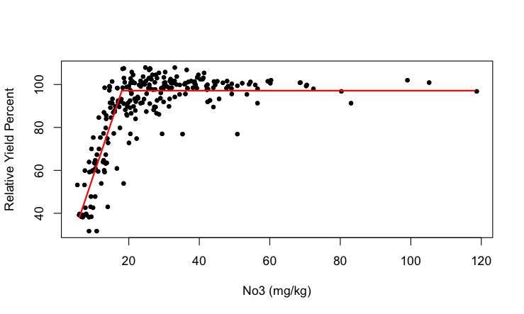
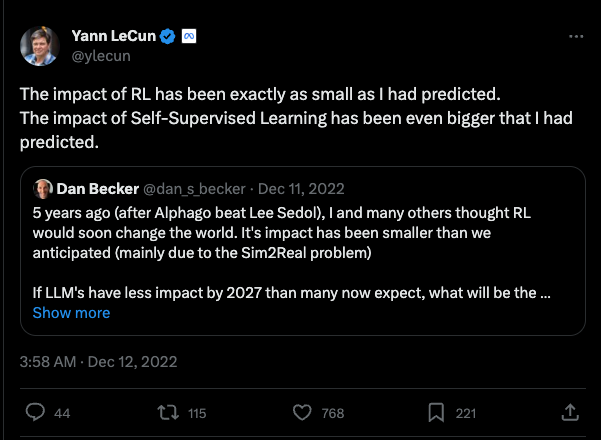
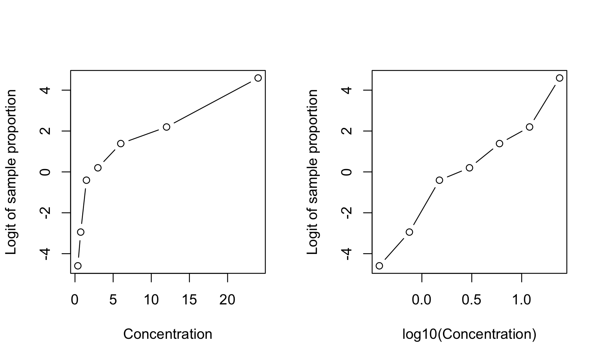
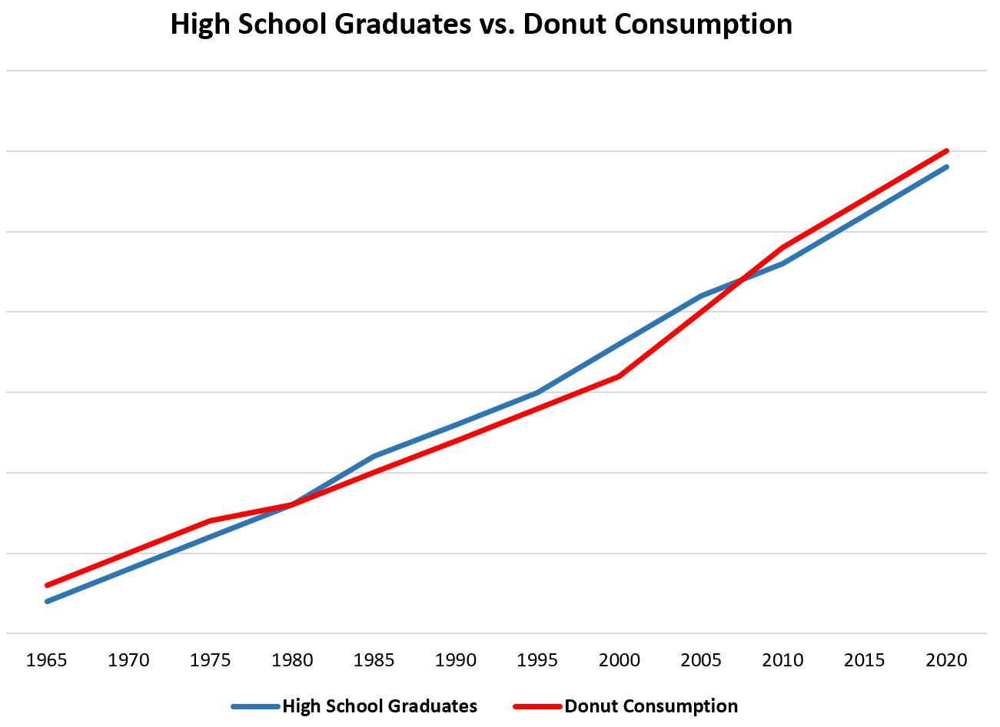
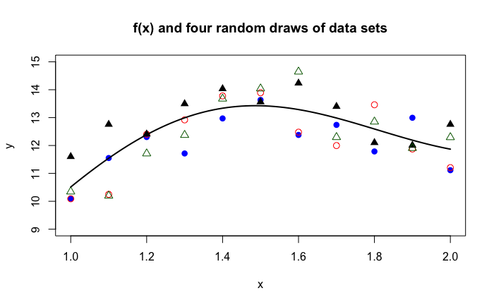
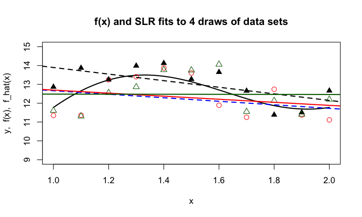
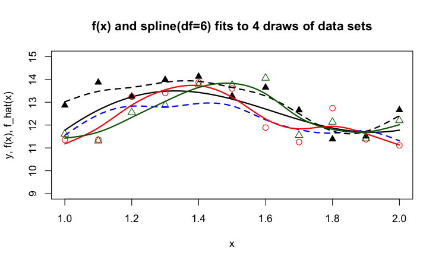
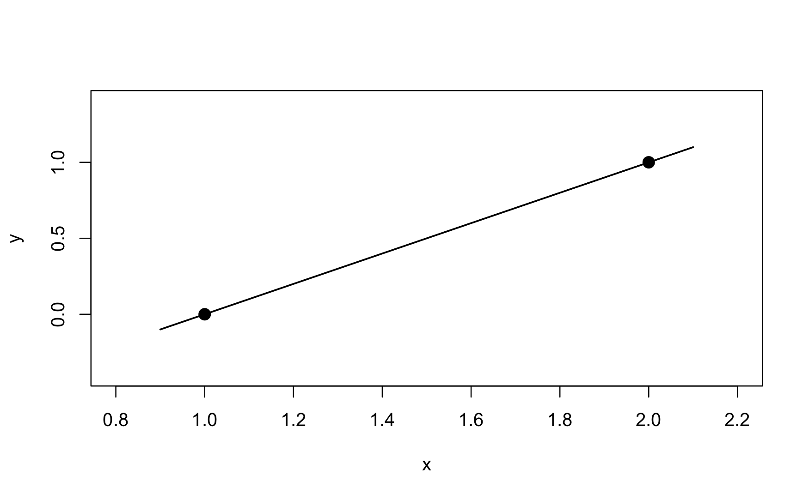
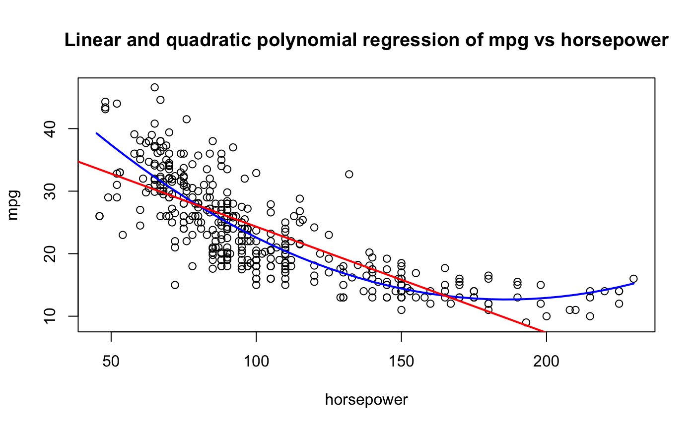
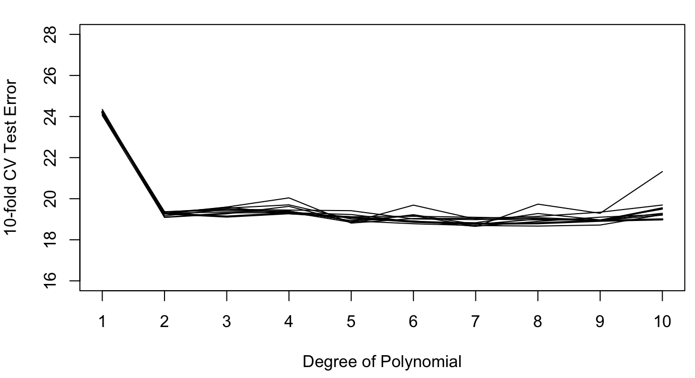

{kind=link}
import pandas as pd
import duckdb
con = duckdb.connect(database="../ads5064.ddb")
fit = con.sql("SELECT * FROM fitness").df()
from sklearn.model_selection import train_test_split
train, test = train_test_split(fit,random_state=235,train_size=0.5)12 General Topics
12.1 Introduction
This chapter dives into selected topics to set the stage for a more rigorous mathematical treatment later. The goal is to understand the concepts and to become familiar with the notation and terminology of data analytics. The material depends more on formulas than previous chapter but is not very “mathy”.
At the end of the chapter you will know about important classes of statistical models and how to express them mathematically. The difference between regression and classification models will be clear and how regression predictions are often the precursor to classifications. The bias-variance tradeoff is a balance every data science project needs to strike—you need to understand the origin of the tradeoff and how to measure model performance to find the balance between overfitting and underfitting. Training, test, and validation data sets are universal in data science to help build good models. We cover the basics in this chapter and the details of data splitting and cross-validation later.
12.2 Statistical Models
Statistical Learning and Machine Learning
Much is being made of the difference between statistical models and machine learning models, or to be more precise, between statistical learning (SL) and machine learning (ML).
Definition: Statistical Learning
Statistical Learning is the process of understanding data through the application of tools that describe structure and relationships in data. Models are formulated based on the structure of data to predict outcomes from inputs, to test hypothesis about relationships, to group data, or to reduce the dimensionality of a problem.
Statistical learning emphasizes prediction more than the testing of hypothesis, as compared to statistical modeling. Many model classes used in statistical learning are the same models one uses to test hypothesis about patterns and relationships in data. Emphasis of prediction over hypothesis testing—or vice versa—flows from the nature of the problem we are trying to solve. The same model can be developed with focus on predictive capability or with focus on interpretability. We do not want to overdo the distinction between statistical learning and statistical modeling: statistical learning uses statistical models.
Learning is the process of converting experience into knowledge and machine learning is an automated way of learning by using computers. Rather than directly programming computers to perform a task, machine learning is used when the tasks are not easily described and communicated (e.g., driving, reading, image recognition) or when the tasks exceed human capabilities (e.g., analyzing large and complex data sets). Modern machine learning discovered data as a resource for learning and that is where statistical learning and machine learning meet.
SL and ML have more in common, than what separates them:
The input to a learning algorithm is data; the raw material is the same.
The data are thought of as randomly generated, there is some sense of variability in the data that is attributed to random sources.
Both disciplines distinguish supervised and unsupervised forms of learning
They use many of the same models and algorithms for regression, classification, clustering, dimension reduction, etc.
Machine learning uses observed data to describe relationships and “causes”; the emphasis is on predicting new and/or future outcomes. There is comparatively little emphasis on experimentation and hypothesis testing.
A key difference between SL and ML is what Breiman describes as the difference between data modeling and algorithmic modeling. The difference aligns closely with statistical and machine learning thinking. In data modeling, theory focuses on the probabilistic properties of the model and of quantities derived from it. In algorithmic modeling, the focus is on the properties of the algorithm itself: starting values, optimization, convergence behavior, parallelization, hyperparameter tuning, and so on. Consequently, statisticians are concerned with the asymptotic distributional behavior of estimators and methods as \(n \rightarrow \infty\). Machine learning focuses on finite sample properties and ask what accuracy can be expected based on the available data.
The strong assumptions statisticians make about the stochastic data-generating mechanism that produced the data set in hand as a realization are not found in machine learning. That does not mean that machine learning models are free of stochastic elements and assumptions—quite the contrary. It means that statisticians use the data-generating mechanism as the foundation for conclusions rather than the data alone.
When you look at a p-value in a table of parameter estimates, you rely on all assumptions about distributional properties of the data, correctness of the model, and (asymptotic) distributional behavior of the estimator. They flow explicitly from the data-generating mechanism or implicitly from somewhere else. Otherwise, the p-value does not make much sense. (Many argue that p-values are not very helpful and possibly even damaging to decision making but this is not the origin of this discussion.)
If you express the relationship between a target variable \(Y\) and inputs \(x_1, \cdots, x_p\) as
\[ Y = f(x_1,\cdots,x_p) + \epsilon \]
where \(\epsilon\) is a random variable, it does not matter whether you perform data modeling or algorithmic modeling. We need to think about \(\epsilon\) and its properties. How does \(\epsilon\) affect the algorithm, the prediction accuracy, the uncertainty of statements about \(Y\) or \(f(x_1, \cdots, x_p)\)? That is why all data professionals need to understand about stochastic models and statistical models.
Stochastic and Statistical Models
A stochastic model describes the probability distribution of outcomes by allowing one or more of the model elements to be random variables.
Suppose we are charged with developing a model to predict recurrence of cancer. There are many possible aspects that influence the outcome:
- Age, gender
- Medical history
- Lifestyle factors (nutrition, exercise, smoking, …)
- Type of cancer
- Size of the largest tumor
- Site of cancer
- Time since diagnostic, time from treatment
- Type of treatment
- and so on
If we were to try and build a deterministic model that predicts cancer recurrence perfectly, all influences would have to be taken into account and their impact on the outcome would have to be incorporated correctly. That would be an incredibly complex model, and impractical.
By taking a stochastic approach we acknowledge that there are processes that affect the variability in cancer recurrence we observe from patient to patient. The modeling can now focus on the most important factors and how they drive cancer recurrence. The other factors are included through random effects. If the model captures the salient factors and their impact correctly, and the variability contributed by other factors is not too large, and not systematic, the model is very useful. It possibly is much more useful than an inscrutably complex model that tries to accommodate all influences perfectly.
The simplest stochastic model for cancer recurrence is to assume that the outcome is a Bernoulli (binary) random variable taking on two states (cancer recurs, cancer does not recur) with probabilities \(\pi\) and \(1-\pi\). If we code the two states numerically, cancer recurs as 1, cancer does not recur as 0, the probability mass function of cancer recurrence is that of the random variable \(Y\),
\[ \Pr(Y=y) = \left \{ \begin{array}{cl} \pi & y=1 \\ 1-\pi & y = 0\end{array} \right . \]
Definition: Statistical Model
A statistical model is a stochastic model that contains unknown constants, called parameters. Parameters are estimated based on data. Parameters are constants, not random variables. The estimator of a parameter that depends on data is a random variable since the data are random.
The parameter in our cancer model is \(\pi\), the probability that \(Y\) takes on the value 1. In statistics, this probability is often called the “success” probability and its complement is called the “failure” probability. We prefer to call them the “event” and “non-event” probabilities instead. The event is the binary outcome coded as a 1.
Because we cannot visit with all cancer patients, a sample of patients is used to estimate \(\pi\). This process introduces uncertainty into the estimator of \(\pi\), a larger sample will lead to a more precise (a less uncertain) estimator.
The model is overly simplistic in that it captures all possible effects on cancer recurrence in the single quantity \(\pi\). Regardless of age, gender, type of cancer, etc., we would predict a randomly chosen cancer patient’s likelihood to experience a recurrence as \(\pi\). To incorporate input variables that affect the rate of recurrence we need to add structure to \(\pi\). A common approach in statistical learning and in machine learning is that inputs have a linear effect on a transformation of the probability \(\pi\):
\[ g(\pi) = \beta_0 + \beta_1 x_1+\cdots + \beta_p x_p \]
When \(g(\pi)\) is the logit function
\[\log\left \{ \frac{\pi}{1-\pi} \right\}\]
this is called a logistic regression model. \(x_1,\cdots,x_p\) are the inputs of the model, \(\beta_0, \cdots, \beta_p\) are the parameters of the model. If we accept that the basic structure of the logistic model applies to the problem of predicting cancer occurrence, we use our sample of patient data to
- estimate the parameters \(\beta_0, \cdots, \beta_p\);
- determine which inputs and how many inputs are adequate: we need to determine \(p\) and the specific input variables;
- determine whether the logit function is the appropriate transformation to linearity.
The effect of the inputs is called linear on \(g(\pi)\) if \(g(\pi)\) is a linear function of the parameters. To test whether this is the case take derivatives of the function with respect to all parameters. If the derivatives do not depend on parameters, the effect is linear.
\[\frac{\partial g(\pi)}{\partial\beta_{0}} = 1\]
\[\frac{\partial g(\pi)}{\partial\beta_{1}} = x_{1}\]
\[\frac{\partial g(\pi)}{\partial\beta_{p}} = x_{p}\] None of the derivatives depends on any of the \((\beta_{0},\ldots,\beta_{p})\); \(g(\pi)\) is linear in the parameters. A non-linear function is non-linear in at least one parameter.
Example: Plateau (hockey stick) Model
A plateau model reaches a certain amount of output and remains flat afterwards. When the model prior to the plateau is a simple linear model, the plateau model is also called a hockey-stick model.

The point at which the plateau is reached is called a change point. Suppose the change point is denoted \(\alpha\). The hockey-stick model can be written as
\[ \text{E}\lbrack Y\rbrack = \left\{ \begin{matrix} \beta_{0} + \beta_{1}x & x \leq \alpha \\ \beta_{0} + \beta_{1}\alpha & x > \alpha \end{matrix} \right. \]
If \(\alpha\) is an unknown parameters that is estimated from the data, this is a non-linear model.
Model Components
The expression for the logistic regression model
\[g(\pi) = \beta_{0} + \beta_{1}x_{1} + \ldots + \beta_{p}x_{p}\]
looks quite different from the model introduced earlier,
\[Y = f\left( x_{1},\ldots,x_{p} \right) + \epsilon\]
Where is the connection?
The error term \(\epsilon\) is a random variable and we need to specify some of its distributional properties to make progress. At a minimum we provide the mean and variance of \(\epsilon\). If the model is correct—correct on average—then the error terms should have a mean of zero and not depend on any input variables (whether those in the model or other inputs). A common assumption is that the variance of the errors is a constant and not a function of other effects (fixed or random). The two assumptions are summarized as \(\epsilon \sim \left( 0,\sigma^{2} \right)\); read as \(\epsilon\) follows a distribution with mean 0 and variance \(\sigma^{2}\).
Mean function
Now we can take the expected value of the model and find that
\[ \text{E}\lbrack Y\rbrack = \text{E}\left\lbrack f\left( x_{1},\ldots,x_{p} \right) + \epsilon \right\rbrack = f\left( x_{1},\ldots,x_{p} \right) + \text{E}\lbrack\epsilon\rbrack = f\left( x_{1},\ldots,x_{p} \right) \]
Because the errors have zero mean and because the function \(f\left( x_{1},\ldots,x_{p} \right)\) does not contain random variables, \(f\left( x_{1},\ldots,x_{p} \right)\) is the expected value (mean) of \(Y\). \(f\left( x_{1},\ldots,x_{p} \right)\) is thus called mean function of the model.
Example: Curvilinear models
Polynomial models such as a quadratic model \[Y = \beta_{0} + \beta_{1}x + \beta_{2}x^{2} + \epsilon\] or cubic model \[Y = \beta_{0} + \beta_{1}x + \beta_{2}x^{2} + \beta_{3}x^{3} + \epsilon\] have a curved appearance when \(Y\) is plotted against \(x\). They are linear models, however.
To test this, take derivatives of the mean function with respect to the parameters. For the quadratic model the partial derivatives with respect to \(\beta_{0}\), \(\beta_{1}\), and \(\beta_{2}\) are 1, \(x\), and \(x^{2}\), respectively. The model is linear in the parameters.
To emphasize that the models are not just straight lines in \(x\), a linear model with curved appearance is called curvilinear.
What does the mean function look like in the logistic regression model? The underlying random variable \(Y\) has a Bernoulli distribution. Its mean is
\[\text{E}\lbrack Y\rbrack = \sum y\, \Pr(Y = y) = 1 \times \pi + 0 \times (1 - \pi) = \pi\]
The logit function \[g(\pi) = \log \left\{ \frac{\pi}{(1 - \pi)} \right\}\] is invertible and the model \[g(\pi) = \beta_0 + \beta_1 x_{1} + \ldots + \beta_p x_p\]
can be written as
\[\text{E}\lbrack Y\rbrack = \pi = g^{- 1}\left( \beta_{0} + \beta_{1}x_{1} + \ldots + \beta_{p}x_{p} \right)\]
The mean function of the logistic model is also a function of the inputs. It is a neat exercise to show that if \(g(\pi)\) is the logit function the mean function is
\[\pi = \frac{1}{1 + \exp\left\{ - \beta_0 - \beta_1 x_1 - \cdots - \beta_p x_p \right\}}\]
You can now also show that although \(g(\pi)\) is linear in the parameters, \(\pi\) is a non-linear function of the parameters.
Systematic component
The mean functions \[f\left( x_{1},\ldots,x_{p} \right)\] and \[\frac{1}{1 + \exp\left\{ - \beta_{0} - \beta_{1}x_{1} - \ldots - \beta_p x_p \right\} }\] look rather different, except for the input variables \(x_{1},\ldots,x_{p}\).
For the model \(Y = f\left( x_{1},\ldots,x_{p} \right) + \epsilon\) we left it open how the mean function depends on parameters. There are three general approaches.
The systematic component has the form of a linear predictor, that is, a linear combination of the inputs. The linear predictor is frequently denoted as \(\eta\):
\[\eta = \beta_{0} + \beta_1 x_1 + \cdots + \beta_p x_p\]
The parameter \(\beta_0\) is called the intercept of the linear predictor. Although optional, it is included in most models to capture the effect on the mean if no input variables are present. Models with a linear predictor and an intercept have \(p + 1\) parameters in the mean function.
The logistic regression model also contains a linear predictor. Depending on whether you write the model in terms of \(\pi\) or \(g(\pi)\), the expressions are
\[g(\pi) = \eta\]
\[\pi = \frac{1}{1 + \exp\{ - \eta \}}\]
The mean function can be a general non-linear function of the parameters. The number of input variables and the number of parameters can be quite different.
The Mitscherlich model is popular in agricultural studies of plant growth as a function of an input such as a fertilizer. The plant species is a commercial crop. If \(Y\) denotes plant yield and \(x\) the amount of input, the Mitscherlich model is
\[Y = f(x,\xi,\lambda,\kappa) + \epsilon = \lambda + (\xi - \lambda)\exp\left\{ - \kappa x \right\} + \epsilon\]
The mean function \(f\)() depends on one input variable \(x\) and three parameters \((\xi,\lambda,\kappa)\). Taking derivatives, it is easily established that the mean function is non-linear:
\[\frac{\partial f(x,\xi,\lambda,\kappa)}{\partial\xi} = \exp\{ - \kappa x \}\]
The derivative with respect to \(\xi\) depends on the \(\kappa\) parameter.
Non-linear models like the Mitscherlich equation are appealing because they are easily interpretable. The parameters have meaning in terms of the subject domain:
\(\xi\) is the crop yield if no fertilizer is applied, the mean of \(Y\) at \(x = 0\). This is the baseline yield
\(\lambda\) is the upper yield asymptote as \(x\) increases
\(\kappa\) relates to a rate of change, how quickly the yield increases from \(\xi\) and reaches \(\kappa\).
Figure 12.1 shows the Mitscherlich model fitted to a set of plant yield data, the input variable is the nitrogen rate applied (in kg/ha). Visual estimates for the baseline yield and the asymptotic yield are \(\widehat{\xi} = 40\) and \(\widehat{\lambda} = 80\).

Interpretability of the parameters enables mapping of research questions to the model:
Is the asymptotic yield greater than 75? This can be answered with a confidence interval for the estimate of \(\lambda\).
At what level of \(x\) does yield achieve 75% of the maximum? This is an inverse prediction problem. Set yield to 75% of \(\lambda\) and solve the model for \(x\).
The rate of change in yield is less than ½ unit once \(x = 100\) are applied. This can be answered with a hypothesis test for \(\kappa\).
The third method of specifying the systematic component is to not write it as a function of inputs and parameters. This is common for non-parametric methods such as smoothing splines, local regression, generalized additive models, and kernel methods. These models still have parameters, but the relationship between inputs and parameters is implied through the method of training the models.
For example, LOESS is a local polynomial regression method. A LOESS model of degree 2 fits a quadratic polynomial model to a portion of the data (a window). Within window \(k\), the model takes the form
\[Y = \beta_{0k} + \beta_{1k}x + \beta_{2k}x^{2} + \epsilon\]
As the window moves across the range of \(x\), different observations are captured in the window. The underlying model in each window is a quadratic polynomial but the values of the parameter estimates change from window to window.
Random component
The random components of a statistical model are the stochastic elements that describe the distribution of the target variable \(Y\). By now we are convinced that most data we work with are to some degree the result of random processes and that incorporating randomness into models makes sense. The model does not need to be correct for every observation, but it needs to be correct on average—an additive zero-mean random error is OK. Even if all influences on the output \(Y\) were known, it might be impossible to measure them, or to include them correctly into the model. Randomness is often introduced deliberately by sampling observations from a population or by randomly assigning treatments to experimental units. Finally, stochastic models are often simpler and easier to explain than other models. Among competing explanations, the simpler one wins (Occam’s Razor).
We have seen two basic ways to reflect randomness in a statistical model:
By adding an additive error term to a mean function
By describing the distribution of the target variable
The Mitscherlich model is an example of the first type of specification:
\[Y = f(x,\xi,\lambda,\kappa) + \epsilon = \lambda + (\xi - \lambda)\exp\left\{ - \kappa x \right\} + \epsilon\]
Under the assumption that \(\epsilon \sim \left( 0,\sigma^{2} \right)\), it follows that \(Y\) is randomly distributed with mean \(f(x,\xi,\lambda,\kappa)\) and variance \(\sigma^{2}\); \(Y \sim \left( f(x,\xi,\lambda,\kappa),\sigma^{2} \right)\). If the model errors were normally distributed, \(\epsilon \sim N\left( 0,\sigma^{2} \right)\), then \(Y\) would also be normally distributed. Randomness is contagious.
The logistic regression model is an example of the second type of specification:
\[g\left( \text{E}\lbrack Y\rbrack \right) = \beta_{0} + \beta_{1}x_{1} + \ldots + \beta_{p}x_{p}\]
and \(Y\) follows a Bernoulli distribution. It does not make sense to write the model with an additive error term unless the target variable is continuous.
Models can have more than one random element. In the cancer recurrence example, suppose we want to explicitly associate a random effect with each patient, \(b_{i} \sim \left( 0,\sigma_{b}^{2} \right)\), say. The modified model is now
\[g\left( \pi\ |\ b_{i} \right) = \beta_{0} + b_{i} + \ \beta_{1}x_{1} + \ldots + \beta_{p}x_{p}\]
Conditional on the patient-specific value of \(b_{i}\) the model is still a logistic model with intercept \(\beta_{0} + b_{i}\). Because the parameters \(\beta_{0},\ \cdots,\beta_{p}\) are constants (not random variables), they are also referred to as fixed effects. Models that contain both random and fixed effects are called mixed models.
Mixed models occur naturally when the sampling process is hierarchical.
For example, you select apples on trees in an orchard to study the growth of apples over time. You select at random 10 trees in the orchard and chose 25 apples at random on each tree. The apple diameters are then measured in two-week intervals. To represent this data structure, we need a few subscripts.
Let \(Y_{ijk}\) denote the apple diameter at the \(k\)th measurement of the \(j\)th apple from the \(i\)th tree. A possible decomposition of the variability of the \(Y_{ijk}\) could be
\(Y_{ijk} = \beta_{0} + a_{i} + \eta_{ijk} + \epsilon_{ijk}\)
where \(\beta_{0}\) is an overall (fixed) intercept, \(a_{i} \sim \left( 0,\sigma_{a}^{2} \right)\) is a random tree effect, \(\eta_{ijk}\) is an effect specific to apple and measurement time, and \(\epsilon_{ijk} \sim \left( 0,\sigma_{\epsilon}^{2} \right)\) are the model errors. This is a mixed model because we have multiple random effects (\(a_{i}\) and \(\epsilon_{ijk}\)). In addition, we need to decide how to parameterize \(\eta_{ijk}\). Suppose that a simple linear regression trend is reasonable for each apple over time. Estimating a separate slope and intercept for each of the 10 x 25 apples would result in a model with over 500 parameters. A more parsimonious parameterization is to assume that the apples share a tree-specific (fixed) intercept and slope and to model the apple-specific deviations from the tree-specific trends with random variables:
\[\eta_{ijk} = \left( \beta_{0i} + b_{0ij} \right) + {(\beta}_{1i} + b_{1ij})t_{ijk}\]
\(t_{ijk}\) is the time that a given apple on a tree is measured. The apple-specific intercept offsets from the tree-specific intercepts \(\beta_{0i}\) are model as random variables \(b_{0ij} \sim \left( 0,\sigma_{b_{0}}^{2} \right)\). Similarly, \(b_{1ij} \sim \left( 0,\sigma_{b_{1}}^{2} \right)\) models the apple-specific offset for the slopes as random variables. Putting everything together we obtain
\(Y_{ijk} = \beta_{0} + \left( \beta_{0i} + b_{0ij} \right) + {(\beta}_{1i} + b_{1ij})t_{ijk} + \epsilon_{ijk}\)
Note that \(a_{i}\) was no longer necessary in this model, that role is now played by \(\beta_{0i}\).
The total number of parameters in this model is 24 (1 overall intercept, 10 tree-specific intercepts, 10 tree-specific slopes, and 3 variances (\(\sigma_{\epsilon}^{2}, \sigma_{b_{0}}^{2}\), \(\sigma_{b_{1}}^{2}\)).
This is a relatively complex model and included here only to show how the sampling design can be incorporated into the model formulation to achieve interpretable and parsimonious models and how this naturally leads to multiple random effects.
A further refinement of this model is to recognize that the measurements over time for each apple are likely not independent. Furthermore, diameter measurements on the same apple close in time are more strongly correlated than measurements further apart. Incorporating this correlation structure into the models leads to a mixed model with correlated errors.
Response (Target) variable
A model has inputs that are processed by an algorithm to produce an output. When the output is a variable to be predicted, classified, or grouped, we refer to it with different—but interchangeable—names as the response variable, or the target variable, or the dependent variable. We are not particular about what you call the variable, as long as we agree on what we are talking about—the left-hand side of the model.
The target variable is a random variable and can be of different types. This matters greatly because we have to match distributional assumptions to the natural type of the target. Applying an analytic method designed for continuous variables that can take on infinitely many values to a binary variable that takes on two values is ill advised. However, it happens. A lot.
The first distinction is whether the target variable is continuous or discrete.
Continuous: the number of possible values of the variable is not countable. Typical examples are physical measurements such as weight, height, length, pressure, temperature. If the values of a variable are countable but the cardinality is high, applying methods for continuous data can make sense—for example, number of days since birth.
Discrete: the number of possible values is countable. Even if the number of possible values is infinite, the variable is still discrete. The number of fish caught per day does not have a theoretical upper limit, although it is highly unlikely that a weekend warrior will catch 1,000 fish. A commercial fishing vessel might.
Discrete variables are further divided into the following groups:
Count Variables: the values are true counts, obtained by enumeration. There are two types of counts:
Counts per unit: the count relates to a unit of measurement, e.g., the number of fish caught per day, the number of customer complaints per quarter, the number of chocolate chips per cookie, the number of cancer incidences per 100,000.
Proportions (Counts out of a total): the count can be converted to a proportion by dividing it with a maximum value. Examples are the number of heads out of 10 coin tosses, the number of larvae out of 20 succumbing to an insecticide,
Categorical Variables: the values consist of labels, even if numbers are used for labeling.
Nominal variables: The labels are unordered, for example the variable “fruit” takes on the values “apple”, “peach”, “tomato” (yes, tomatoes are fruit but do not belong in fruit salad).
Ordinal variables: the category labels can be arranged in a natural order in a lesser-greater sense. Examples are 1—5 star reviews or ratings of severity (“mild”, “modest”, “severe”).
Binary variables: take on exactly two values (dead/alive, Yes/No, 1/0, fraud/not fraud, diseased/not diseased)
12.3 Supervised and Unsupervised Methods
Statistical learning and machine learning distinguish supervised and unsupervised methods of learning. Machine learning covers a third technique of learning not found in statistics, reinforcement learning.
Supervised Learning
Definition: Supervised Learning
Supervised learning trains statistical learning models through a target variable.
Supervised learning is characterized by the presence of a target variable, also called a dependent variable, response variable, or output variable. This is the attribute we wish to model. The training and test data sets contain values for the target variable, in machine learning these values are often called the labels and are described as the “ground truth”. All other variables in the data set are potentially input variables. In short, we know the values of the target variable, now we need to use it in analytical methods to learn how outputs and inputs connect.
The goals of supervised learning are to
Predict the target variable from input variables.
Develop a function that approximates the underlying relationship between inputs and outputs.
Understand the relationship between inputs and outputs.
Classify observations into categories of the target variable based on the input variables.
Group the observations into sets of similar data based on the values of the target variable and based on values of the inputs.
Reduce the dimensionality of the problem by transforming target and inputs from a high-dimensional to a lower-dimensional space.
Test hypotheses about the target variable.
Studies can pursue one or more of these goals. For example, you might be interested in understanding the relationship between target and input variables and use that relationship for predictions.
The name supervised learning comes from thinking of learning in an environment that is supervised by a teacher. The teacher asks questions for which they know the correct answer (the ground truth) and judge a student’s response to the questions. The goal is to increase students’ knowledge as measured by the quality of their answers. But we do not want students to just memorize answers, we want to teach them to be problem solvers, to apply the knowledge to new problems, to generalize.
The parallel between the description of supervised learning in a classroom and training an algorithm on data is obvious: the problems asked by the teacher, the learning algorithm, are the data points, \(Y\) is the correct answer, the inputs \(x_{1},\cdots,x_{p}\) are the information used by the students to answer the question. The discrepancy between question and answer is measured by \((y - \widehat{y})^2 = (y - \widehat{f}\left( x_{1},\cdots x_{p} \right))^2\) or some other error metric. The training of the model stops when we found a model that generalizes well to previously unseen problems. We are not interested in models that follow the observed data too closely.
Table 12.1 contains a non-exhaustive list of algorithms and models you find in supervised learning.
| Linear regression | Nonlinear regression | Regularized regression (Lasso, Ridge, Elastic nets) |
| Local polynomial regression (LOESS) | Smoothing splines | Kernel methods |
| Logistic regression (binary & binomial) | Multinomial regression (nominal and ordinal) | Poisson regression (counts and rates) |
| Decision trees | Random forests | Bagged trees |
| Adaptive boosting | Gradient boosting machine | Extreme gradient boosting |
| Naïve Bayes classifier | Nearest-neighbor methods | Discriminant analysis (linear and quadratic) |
| Principal component regression | Partial least squares | Generalized linear models |
| Generalized additive models | Mixed models (linear and nonlinear) | Models for correlated data (spatial, time series) |
| Support-vector machines | Neural networks | Extreme gradient boosting |
There is a lot to choose from, and for good reason. The predominant application of data analytics is supervised learning with batch (or mini-batch) data. In batch data analysis the data already exist as a historical data source in one place. We can read all records at once or in segments (called mini-batches). If we have to read the data multiple times, for example, because an iterative algorithm passes through the data at each iteration, we can do so.
Batch-oriented learning contrasts with online learning where the data on which the model is trained is generated and consumer in real time.
Unsupervised Learning
Definition: Unsupervised Learning
In unsupervised learning methods a target variable is not present.
Unsupervised learning does not utilize a target variable; hence it cannot predict or classify observations. However, we are still interested in discovering structure, patterns, and relationships in the data.
The term unsupervised refers to the fact that we no longer know the ground truth because there is no target variable. Hence the concept of a teacher who knows the correct answers and supervises the learning progress of the student does not apply. In unsupervised learning there are no clear error metrics by which to judge the quality of an analysis, which explains the proliferation of unsupervised methods and the reliance on heuristics. For example, a 5-means cluster analysis will find five groups of observations in the data, whether this is the correct number or not, and it is up to us to interpret what differentiates the groups and to assign group labels.
Often, unsupervised learning is used in an exploratory fashion, improving our understanding of the joint distributional properties of the data and the relationships in the data. The findings then help lead us toward supervised approaches.
A coarse categorization of unsupervised learning techniques also hints at their application:
Association analysis: which values of the variables \(x_{1},\cdots,x_{p}\) tend to occur together in the data? An application is market basket analysis, where the \(X\)s are items are in a shopping cart (or a basket in the market), and \(x_{i} = 1\) if the \(i\)th item is present in the basket and \(x_{i} = 0\) if the item is absent. If items frequently appear together, bread and butter, or beer and chips, for example, then maybe they should be located close together in the store. Association analysis is also useful to build recommender systems: shoppers who bought this item also bought the following items
Cluster analysis: can data be grouped based on \(x_{1},\cdots,x_{p}\) into sets such that the observations within a set are more similar to each other than they are to observations in other sets? Applications of clustering include grouping customers into segments. Segmentation analysis is behind loyalty programs, lower APRs for customers with good credit rating, and churn models.
Dimension reduction: can we transform the inputs \(x_{1},\cdots,x_{p}\) into a set \(c_{1},\cdots,c_{k}\), where \(k \ll p\) without losing relevant information? Applications of dimension reduction are in high-dimensional problems where the number of inputs is large relative to the number of observations. In problems with wide data, the number of inputs \(p\) can be much larger than \(n\), which eliminates many traditional methods of analysis from consideration.
Methods of unsupervised learning often precede supervised learning; the output of an unsupervised learning method can serve as the input to a supervised method. An example is dimension reduction through principal component analysis (PCA) prior to supervised regression. Suppose you have \(n\) observations on a target variable \(Y\) and a large number of potential inputs \(x_{1},\cdots,x_{p}\) where \(p\) is large relative to \(n\). PCA computes linear combinations of the \(p\) inputs that account for decreasing amounts of variability among the \(X\)s. These linear combinations are called the principal components. For example, the first principal component explains 70% of the variability in the inputs, the second principal component explains 20% and the third principal component 5%. Rather than building a regression model with \(p\) predictors, we use only the first three principal components as inputs in the regression model. The resulting regression model is called a principal component regression (PCR) because its inputs are the result of a PCA. The PCA is an unsupervised model because it does not use information about \(Y\) in forming the principal components. If \(p = 250\), using the first three principal components replaces
\[Y = \beta_{0} + \beta_{1}{\ x}_{1} + \beta_{2}x_{2} + \beta_{3}x_{3} + \beta_{4}x_{4} + \cdots + \beta_{250}x_{250} + \epsilon\]
with
\[Y = \alpha_{0} + \alpha_{1}c_{1} + \alpha_{2}c_{2} + \alpha_{3}c_{3} + \epsilon\]
where \(c_{1}\) denotes the first principal component, itself a linear combination of the 250 inputs
\[c_{1} = \gamma_{1}x_{1} + \gamma_{2}x_{2} + \gamma_{3}x_{3} + \cdots + \gamma_{250}x_{250}\]
Reinforcement Learning
Reinforcement learning (RL) is unique to machine learning and does not fall neatly in the supervised/unsupervised learning buckets. It is a very powerful method that received a lot of attention when algorithms could be trained on data to play games extremely well.
The approach, based on reinforcement learning, was fundamentally different from the expert system-based approach used so far to teach computers how to play games. An expert system translates the rules of the game into machine code and adds strategy logic. For example, the Stockfish open-source chess program, released first in 2008, has developed with community support into (one of) the best chess engines in the world. In 2017, Google’s DeepMind released AlphaZero, a chess system trained using reinforcement learning. After only 24 hours of training, the data-driven AlphaZero algorithm crushed Stockfish, the best chess engine humans have been able to build over 10 years.
Previously, Google’s DeepMind had developed AlphaGo, a reinforcement-trained system that beat the best Go player in the world, Lee Sedol, four to one. This was a remarkable achievement as Go had been thought to be so complex and requiring intuition that would escape computerization at the level of expert players.
In reinforcement learning, an agent (a player) is taking actions (makes moves) in an environment (the game). The agent learns by interacting with the environment by receiving feedback on the moves. Actions are judged by a reward function (a score) and the system is trained to maximize the sum of future rewards. In other words, given your current position in the game, choose the next move to maximize the score from here on out.
An interesting difference between AlphaGo and AlphaZero is the nature of the training data. Both systems are trained using reinforcement learning. AlphaGo was trained on records of many expert-level games. It was trained to play against historic experts. Success was getting better compared to how human experts played. AlphaZero was trained by playing against itself. Success was beating its former self.
Unlike supervised learning, inputs and outputs do not need to be present in reinforcement learning. The technique is commonly used in robotics, gaming, and recommendation systems.
Until recently, a limitation of RL was the need for a good reward function. It is important that actions in the environment are properly judged. In situation where the result of a move is difficult to judge, reinforcement learning was difficult to apply. For example, in natural language processing, where an action produces some prose, how do we rate the quality of the answer?
This was the problem faced by systems like Chat-GPT. How do you score the answer produced during training to make sure the algorithm continuously improves? The solution was a form of reinforcement learning modified by human intervention. RLHF, reinforcement learning with human feedback, uses human interpreters to assign scores to the actions (the Chat-GPT answers).
In 2017, when AlphaGo beat Lee Sedol, it was thought that reinforcement learning would change the world. Despite its remarkable achievement in gameplay and robotics, the impact of RL fell short of expectations.

Why did RL fall short? Developing and training reinforcement learning models is an expensive undertaking. The barrier to entry is very high, limiting RL research and development to large tech-savvy organizations. The main reason is the Sim2Real problem mentioned in the tweet above. Reinforcement learning trains an agent in a simulated, artificial environment. The real world is much more complex and transferring training based on simulation to reality is difficult. The RL agents end up performing poorly in real applications.
12.4 Regression and Classification
Regression and the Regression to the Mean Fallacy
The term regression was coined by Sir Francis Galton in 1877 in his study of genetics. Galton observed a relationship between physical attributes of offspring and their parents. He found that offspring deviated less from the mean value of the population than their parents did. For example, taller parents tend to have taller children, but children of taller parents tend to be shorter than their parents and children of shorter parents tend to be taller than their parents.
The cause Galton attributed to this phenomenon—which he called regression toward mediocrity—is controversial, his arguments had implications about natural selection and eugenics. As a statistical phenomenon, it is well understood. Attributes are distributed randomly; if you draw an extreme observation from a symmetric distribution, then a subsequent draw is likely to be less extreme, there is a regression to the mean.
Figure 12.3 displays this phenomenon based on the distribution of HDL cholesterol values in a single person. Our cholesterol levels vary from day to day and if the distribution is normally distributed, it might look like the density in the figure, centered at a mean of 50 mg/dl. Suppose you measure a person’s HDL cholesterol, and it results in a first measurement of 30 mg/dl. The value is on the low side of the distribution, but it is not implausible. A follow-up measurement is more likely to be observed near the center of the distribution where most of the probability density is located. A second measurement might thus return a value of 55 mg/dl. A regression to the mean occurred between the first and second measurements.

Another fun example of regression to the mean is answering multiple-choice questions on an exam at random. If you administer the exam, all students answer questions completely at random, and you choose the students with the top 10% of scores to take the exam again—choosing answers at random again—then their scores will regress to the mean. The top 10% in the first test will get about ½ the questions correct. Their initial high scores were due to luck.
The term regression has evolved to describe statistical methods that model the mean behavior of an attribute and separate it from non-systematic, random behavior. The regression to the mean phenomenon does not mean regression methods are bad. It is a fact of random variation and a real fallacy when interpreting data. In the cholesterol example, is the change from 30 to 50 mg/dl of HDL due to natural variation or due to a systematic effect, for example, a medical intervention? Regression is intended to separate signal from noise. The regression to the mean fallacy is to misinterpret random variation as a signal.
Example: Testing a Treatment Effect
You want to determine whether a change in diet reduces the risk of heart disease. From a group of individuals, you select those at greatest risk of heart disease and put them on the diet. After some time, you reassess their risk of heart disease.
Because of regression to the mean, the follow-ups will likely show an improvement even if the diet has no effect at all. The correct way of studying whether the diet has an effect is to randomly divide the individuals into two groups and assign the diet to one group (the treated group) while the other group stays on their normal diet. If the individuals in the treated group improve more than the untreated group, to a degree that cannot be attributed just to chance, then we can make a statement that the diet is effective in reducing the risk of heart disease.
Regression Models
Definition: Regression Model
A regression model is a statistical model that describes how the mean of a random variable depends on other factors. The factors are often called inputs, predictor variables, predictors, or independent variables.
The variable whose mean is modeled is called the target variable, response variable, or dependent variable.
Regression models are not just for continuous response data, they apply to all response types. The defining characteristic is to model the mean as a function of inputs:
\[\text{E}\lbrack Y\rbrack = f\left( x_{1},\cdots,x_{p},\theta_{1},\cdots,\theta_{k} \right)\]
This expression explicitly lists parameters \(\theta_{1},\cdots,\theta_{k}\) in the mean function. All regression models involve the estimation of unknown, fixed quantities (=parameters), even if they do so obliquely. As we have seen in the non-linear regression example earlier, the number of parameters and the number of inputs do not have to be directly related.
Even if the target variable is categorical, we might be interested in modeling the mean of the variable. The simplest case of categorical variables are binary variables with two levels (two categories). This is the domain of logistic regression. As seen earlier, if the categories are coded numerically as \(Y = 1\) for the category of interest (the “event”) and \(Y = 0\) for the “non-event” category, the mean of \(Y\) is a probability. A regression model for a binary target variable is thus a model to predict probabilities. It is sufficient to predict one of the probabilities in the binary context, we call this the event probability \(\pi\). The complement can be obtained by subtraction, \(1 - \pi\).
Extending this principle to more than two categories leads to regression models for multinomial data. If the category variable has \(k\) levels with labels \(C_{1},\cdots,C_{k}\), we are dealing with \(k\) probabilities; \(\pi_{j}\) is the probability to observe the label \(C_{j}\). Suppose that we are collecting data on ice cream preferences on college campuses. A random sample of students are given three ice cream brands in a random order and report the taste as \(C_{1} =\)’yuck’, \(C_{2} =\)’meh’, and \(C_{3} =\)’great’. Modeling these data with regression techniques, we develop a model for the probability to observe category \(j\) as a function of inputs. A multinomial version of logistic regression looks like the following:
\[\text{Pr}\left( Y = j \right) = \frac{\exp\left\{ \beta_{0j} + \beta_{1j}x_1 + \cdots + \beta_{pj}x_p \right\}} {\sum_{l=1}^k \exp\{\beta_{0l} + \beta_{1l}x_1 + \cdots + \beta_{pl}x_p\}} \]
This is a rather complicated model, but we will see later that it is a straightforward generalization of the two-level case. Instead of one linear predictor we now have separates predictors for the categories. The point of introducing the model here is to show that even in the categorical case we can apply regression methods—they predict category probabilities rather than the mean of a continuous variable.
Classification Problems
Classification applies to categorical variables, binary and multinomial variables that take on a discrete number of categories, \(k\). In the binary case \(k = 2\), and in the multinomial case \(k > 2\).
The classification problem is to predict not the mean of the variable but to assign a category to an observation. The algorithm that maps from input variables to a category is called a classifier and the assignment decision is called the classification rule. Applications of classifications occur in many domains, for example,
Medical diagnosis: Given a patient’s symptoms, assign a medical condition.
Financial services: Determine whether a payment transaction is fraudulent.
Customer intelligence: Assign a new customer to a customer profile (segmentation).
Computer vision: Detect defective items on an assembly line.
Computer vision: Identify objects in an image.
Text classification: Categorize incoming emails as spam.
Digital marketing: predict which advertisement a user is most likely to click.
Search engine: Given a user’s query and search history predict what link they will follow.
Classification problems are also interested in predicting. Rather than the mean of a random variable, they predict the membership in a category.
While the mean-squared prediction error is the standard measure of model performance in regression models, in classification models the quality of a classifier is measured by the misclassification rate (MCR) and related statistics based on contrasting the number of correct and incorrect classifications.
Misclassification rate
Definition: Misclassification Rate
The misclassification rate (MCR) of a classifier is the proportion of observations that are predicted to fall into the wrong category. If \(y_{i}\) is the observed category of the \(i\)th data point, and \({\widehat{y}}_{i}\) is the predicted category, the MCR for a sample of \(n\) observations is
\[\text{MCR} = \frac{1}{n}\sum_{i = 1}^{n}{I\left( y_{i} \neq {\widehat{y}}_{i} \right)}\]
\(I(x)\) is the indicator function,
\[I(x) = \left\{ \begin{matrix} 1 & \text{if }x\text{ is true} \\ 0 & \text{otherwise} \end{matrix} \right. \]
The misclassification rate is simply the proportion of observations we predicted incorrectly. the term \(\sum_{i = 1}^{n}{I\left( y_{i} \neq {\widehat{y}}_{i} \right)}\) counts the number of incorrect predictions. The complement of MCR, the proportion predicted correctly, is called the accuracy of the classification model.
From probabilities to classification
Regression methods play an important role in classification problems because classification rules are tied to the likelihood to observe categories. Suppose we have a three-category problem with \(\pi_{1} = 0.7,\ \pi_{2} = 0.2,\pi_{3} = 0.1\), and you are asked to predict the category of the next randomly drawn observation. The most likely category to appear is \(C_{1}.\)
This classification rule is known as the Bayes classifier.
Definition: Bayes Classifier
The Bayes classifier assigns an observation with inputs \(x_{1},\cdots,x_{p}\) to the class \(C_{j}\) for which
\[\Pr(Y = j \, | \, x_{1},\cdots,x_{p})\]
is largest.
The Bayes classifier is written as a conditional probability, the probability to observe category \(C_{j}\), given the values of the input variables. The reason for this will become clearer later when we cover different methods for obtaining category probabilities. Some methods for deriving category probabilities assume that the \(X\)s are random. In regression problems it is assumed that they are fixed, so there is no difference between the unconditional probability \(\Pr\left( Y = j \right)\) and the conditional probability \(\Pr( Y = j \, | \, x_1,\cdots,x_p)\).
We can now see the connection between regression and classification. Develop first a regression model that predicts the category probabilities \(\Pr( Y = j \, | \, x_1,\cdots,x_p)\). Then apply a classification rule to assign a category based on the predicted probabilities. If you go with the Bayes classifier, you choose the category that has the highest predicted probability. For a 2-category problem where events are coded as \(Y=1\) and non-events are coded as \(Y=0\), this means classifying an observation as an event if
\[\Pr\left( Y = 1\, | \,x_1,\cdots,x_p \right) \geq 0.5\]
12.5 Prediction and Explanation
The goal in developing models is to perform inference, to reach conclusions and make decisions based on data. Broadly, the goals fall into two categories:
Predictive inference: concerned with developing an algorithm that predicts the target variable well and generalizes to observations not used in training the model.
Explanatory inference: also called confirmatory inference, it is concerned with understanding the relationship between target and input variables, understanding the relevance of the inputs, and testing hypotheses about the target variable.
In machine learning, the term inference is used to describe the process of predicting new observations after training a model. Statisticians call this part of data analytics scoring the model. The predicted value is the “score” associated with the new observation. Our view of inference is broader than just predicting (scoring) observations. It includes any application of the trained model to derive information of interest: hypothesis testing, confidence and prediction intervals, predicted values, forecasts, etc.
Data projects are not necessarily either predictive or confirmatory. Many projects have elements of both, as in the following example.
Example: Dose-response study of insect mortality
Figure 12.4 shows logits of sample proportions in a dose-response study of insect larvae mortality as a function of the concentration of an insecticide. Suppose \(y_{i}\) denotes the number of larvae out of \(n_{i}\) that succumb to the insecticide at concentration \(x_{i}\). The right panel of the figure shows the logit of the sample proportion \(p_{i} = \frac{y_{i}}{n_{i}}\),
\[\log\left\{ \frac{p_{i}}{1 - p_{i}} \right\}\]
as a function of the log insecticide concentration. A simple linear model seems appropriate,
\[\log\left\{ \frac{\text{E}\lbrack p_{i}\rbrack}{1 - \text{E}\lbrack p_{i}\rbrack} \right\} = \beta_0 + \beta_1\log_{10}x_i\]
Note that the expected value \(\text{E}\left\lbrack p_{i} \right\rbrack\) is a probability. This model is a generalization of logistic regression for binary data (a 0/1 response) to binomial sample proportions. \(\text{E}\left\lbrack p_{i} \right\rbrack = \pi_{i}\) is the probability that an insect dies when \(\log_{10}x_{i}\) amount of insecticide is applied.

The investigators want to understand the relationship between larvae mortality and insecticide concentration. The parameter estimate for \(\beta_{1}\) is of interest, it describes the change in logits that corresponds to a unit-level change in the log concentration. A hypothesis test for \(\beta_{1}\) might compare the dose-response in this study with the known dose-response slope \(c\) of a standard insecticide. The null hypothesis of this test specifies that the insecticide is as effective as the standard:
\[H_{0}:\beta_{1} = c\]
Another value of interest in dose-response studies is the concentration that achieves a specified effect. For example, the lethal dosage \(LD_{50}\) is the concentration that kills 50% of the subjects. Determining the \(LD_{50}\) value is known as an inverse prediction problem: rather than predicting \(\text{E}\lbrack Y\rbrack\) for a given value of \(X\), we are interested in finding the value \(X\) that corresponds to a given a value of \(\text{E}\lbrack Y\rbrack\).

The \(LD_{50}\) value can be calculated from the model equation. More generally, we can find any value on the x-axis that corresponds to a particular mortality rate \(\alpha\) by solving the following equation for \(\alpha\):
\[\text{logit}(\alpha) = \log\left\{ \frac{\alpha}{1 - \alpha} \right\} = \beta_0 + \beta_1\log_{10}x_\alpha\]
The solution is
\[x_{\alpha} = 10^{\frac{\left( \text{logit}(\alpha) - \beta_{0} \right)}{\beta_{1}}}\]
For the special value \(\alpha = 0.5\), the \(LD_{50}\) results,
\[LD_{50} = 10^{\frac{- \beta_{0}}{\beta_{1}}}\]
In addition to hypothesis testing about \(\beta_{1}\) and calculating the \(LD_{50}\), the investigators are also interested in predicting the mortality rate at concentrations not used in the study.
The inference in the study has explanatory (confirmatory) and predictive elements.
It is important to point out that many studies are not completely confirmatory or predictive, because models that are good at confirmatory inference are not necessarily good at predicting. Similarly, models that predict well are not necessarily good at testing hypotheses. Interpretability of the model parameters is important for confirmatory inference because hypotheses about the real world are cast as statements about the model parameters. Many disciplines place a premium on interpretability, e.g., biology, life sciences, economics, physical sciences, geosciences, natural resources, financial services. Experiments designed to answer specific questions rely on analytic methods designed for confirmatory inference.
Interpretability of the model parameters might not be important for a predictive model. A biased estimator that reduces variability and leads to a lower mean-squared prediction error (see the next section) can be appealing in a predictive model but can be unacceptable in a project where confirmatory inference is the primary focus.
12.6 Correlation and Causation
Correlation
You learn in any basic statistics course that ``correlation is not causation’’. Two random variables are correlated if they vary together, values of one variable tend to be associated with certain values of the other variable.
Definition: Correlation
The correlation between random variables \(X\) and \(Y\), denoted \(\rho_{xy}\) or \(\text{Corr}(X,Y)\), is the ratio of their covariance, \(\text{Cov}(X,Y)\), and the product of their standard deviations:
\[\text{Cov}(X,Y) = \text{E}\lbrack\left( X - \text{E}\lbrack X\rbrack \right)\left( Y - \text{E}\lbrack Y\rbrack \right) = \text{E}\lbrack XY\rbrack - \text{E}\lbrack X\rbrack\text{E}\lbrack Y\rbrack\]
\[\rho_{xy} = \text{Corr}(X,Y) = \frac{\text{Cov}(X,Y)}{\sqrt{\text{Var}\lbrack X\rbrack\text{Var}\lbrack Y\rbrack}}\]
When the correlation between \(X\) and \(Y\) is non-zero, we say that \(X\) and \(Y\) are related to each other or are associated with each other. The covariance measures how \(X\) and \(Y\) vary jointly: as \(X\) deviates from its mean, how does \(Y\) change relative to its mean? When large values of \(X\) are associated with large values of \(Y\), the correlation is positive. Dividing by the product of the standard deviations scales the correlation so that \(- 1 \leq \rho_{xy} \leq 1\).
The correlation—like the covariance—is an expected value, it describes long-run behavior of the joint distribution of \(X\) and \(Y\). The correlation is not directly knowable and is estimated from pairs of observations \((x_1, y_1),\cdots,\ (x_n, y_n)\). The most common estimator when \(X\) and \(Y\) are continuous random variables is the Pearson product-moment correlation coefficient.
Definition: Pearson product-moment correlation coefficient
The Pearson product-moment estimate of the correlation \(\text{Corr}(X,Y),\) based on a sample \((x_1, y_1),\cdots,(x_n,y_n),\) is given by
\[{\widehat{\rho}}_{xy} = \frac{S_{xy}}{\sqrt{S_{xx}S_{yy}}}\]
\[S_{xy} = \sum_{i = 1}^{n}{\left( x_{i} - \overline{x} \right)\left( y_{i} - \overline{y} \right) = \sum_{i = 1}^{n}{x_{i}y_{i}} - n\overline{x}\overline{y}}\]
\[S_{xx} = \sum_{i = 1}^{n}{\left( x_{i} - \overline{x} \right)^{2} = \sum_{i = 1}^{n}x_{i}^{2} - n{\overline{x}}^{2}}\]
\[S_{yy} = \sum_{i = 1}^{n}{\left( y_{i} - \overline{y} \right)^{2} = \sum_{i = 1}^{n}y_{i}^{2} - n{\overline{y}}^{2}}\]
\(S_{xx}\) and \(S_{yy}\) are called the observed sum of squares of \(X\) and \(Y\), respectively. \(S_{xy}\) is the observed sum of cross-products between the variables.
If \(X\) and \(Y\) are correlated, we are very careful not to say that \(X\) causes \(Y\) or that \(Y\) causes \(X\). The crow of a rooster and the rising of the sun are correlated, but the rooster’s crow does not cause the sun to rise.
When one event is the result of another event, the events have a cause—effect relationship. Flipping a light switch causes the light to turn on or off. Taking ibuprofen causes the inflammation to subside. Nothing in the definition or formulas for \(\rho_{xy}\) or \({\widehat{\rho}}_{xy}\) implies causation.
Spurious Correlation
Correlation itself is not a reliable concept either. Correlation can be the result of a direct relationship between the variables, or it can be induced by mediating or latent (confounding) variables. Correlations that are not the result of direct relationships are called spurious.
Example: Donuts and High School Graduation
The number of high school graduates and donut consumption are positively correlated—with increasing donut consumption the number of high school graduates increases. This is a spurious correlation induced by the latent variable population size. Both variables increase over time with an increasing population. Even if the proportion of high school graduates and the donut consumption per person are unrelated, the total numbers will be higher in a larger population.
.
Example: Confounded Customer Churn
A common request to the data science team is to use data analytics to improve customer retention. That starts with understanding why customers leave the company (churn).
An analysis of historical customer data reveals a positive correlation between churn rate and discounts offered. This association is induced by a confounding factor: customer satisfaction. Customers who are dissatisfied are more likely to complain to customer service, which results in discount offers to entice the complaining customer to stay with the vendor. The discount offer cannot overcome the customer’s dissatisfaction and they churn the company. Without understanding the confounding factor—customer satisfaction—an analysis of the raw data could suggest that higher discount rates lead to higher customer attrition.
Example: Storks and Babies
In central Europe a persistent myth is that storks bring babies. The origin of the association probably goes back to medieval days when conception was more common in mid-summer during the celebration of the summer solstice which is also a pagan holiday of marriage and fertility. The white stork is a migratory bird that flies to Africa in the fall and returns to Europe nine months later. The return of the storks coincided with the arrival of newborns; the connection was made that storks brought the babies.
Although the myth has been debunked, there have been several studies of the connection between fertility and the stork abundance. Neyman (1952) describes a study of 54 counties that comprises the following attributes:
\(W\): Number of women of child-bearing age in the county (in 10,000)
\(S\): Number of storks in the county
\(B\): Number of babies born in the county
Since it is likely that these numbers increase with the size of the county, the variables analyzed were \(Y = B/W\) and \(X = S/W\), the birth rate per 10,000 women and the density of storks per 10,000 women. Figure 3.9 reproduces the scatterplot of \(Y\) vs \(X\).
There seems to be a clear trend, the birth rate increases with the stork density. Is that evidence the myth is correct after all?
The reason for the apparent trend is the use of \(W\) in the denominator of both \(X\) and \(Y\). Even if \(S\) and \(B\) are unrelated, the ratio with a common variable induces a correlation between \(X\) and \(Y\).
There are many examples of spurious correlations—from hilarious to frightening—and these are often trotted out to try and explain the difference between correlation and causation. The debate between correlation and causation is not because correlations can be spurious. The rooster crows when the sun rises, this is not a spurious relationship. But the rooster does not cause the sun to rise. Correlation of any kind, true dependence or spurious, does not imply causation—but then what does?
Smoking causes lung cancer but smoking does not cause alcoholism. However, there is an association (correlation) between smoking and alcoholics. How did we establish causation in one instance and correlation in the other? The battle for the statement “smoking causes lung cancer” raged for many years and it was not straightforward to settle the question based on the established methodology for establishing causation.
Experimentation
Statisticians are taught that causation can only be established by following rigorous principles of designed experiments, systematically varying factors of interest (treatments) and controlling other factors in a scheme that allocates experimental units at random to treatments. In a designed experiment we control the data-generating mechanism and create the data to measure the effect of an intervention. Because we are manipulating the environment, and because influences other than the ones we are interested in are neutralized by randomization, can we answer the question why something happened with confidence.
On the other hand, when we only observe the outcome of a data-generating process, rather than making the data-generating process, we cannot say why we observe what we observe. Data in an observational study can tell us that those who took a drug fared better than those who did not take the drug; but the data cannot tell us why they did better. The two groups could be different in other ways that explain a better health outcome.
This thinking is deeply embedded in scientific methodology; the line of inquiry whether smoking causes cancer would have been considered unscientific a few decades ago. A designed experiment in which some randomly chosen individuals are forced to smoke is not possible. In the absence of data from a designed experiment it was argued successfully for a long time that cause-and-effect between smoking and lung cancer has not been established—despite overwhelming evidence to the contrary.
The difference between the experimental and the observational study is doing versus seeing. Designed experiments are the statistician’s way of “doing”, but it is not always possible to manipulate and intervene with systems in this way. Ethical concerns might rule out giving harmful treatments. Some effects can only be assessed over long periods of time and maintaining control of other effects over time can be difficult. Some systems are altered by interventions in ways that make inferences about the original state meaningless. Some systems defy randomization. If you cannot randomize the stock market, how can we establish that higher returns were caused by a change in trading algorithm? How can we establish that human activity causes climate change? Traditional designed experimentation cannot be used. A prohibition to think about causation unless we are in a randomized controlled trial is not helpful.
In our daily lives we make causal inferences, not statistical ones. Human intuition is grounded in causal logic. When I gradually push a book over the edge of a table it will eventually fall off the table, caused by gravity. I do not need to repeat this 20 times to convince me that what was observed—the book fell—was just incredibly unlikely. Human intuition is sufficient to conclude that the physical therapy reduced the pain from tennis elbow. Something was done (to us, physical therapy) and we see the effect (on us, pain reduction). We do not require a statistical experiment to figure out that we have been helped. On the other hand, if we decide among treatment alternatives for tennis elbow, the existence of such experiments can be helpful in deciding on a treatment plan.
The Ladder of Causation
In their influential (cult) text “The Book of Why”, Judea Pearl and Dana MacKenzie introduce the Ladder of Causation, three distinct levels of cognitive ability: seeing, doing, and imagining.
First rung—seeing
Seeing (observing) means detection of regularities and irregularities in the environment and acting on it. Most animals have this cognitive ability. An owl observes the movement of its prey and reacts to it. It recognizes regular and irregular patterns—healthy versus unhealthy prey—and changes its reaction to the environment. The first rung of the ladder of causation is where questions are answered by observing. The typical question is “What if I observe …?” A this rung of the ladder we find relationships and associations but cannot establish causality. We cannot determine why something happened.
Modifying an example given by Pearl and MacKenzie, suppose the manager of a grocery store wonders how likely someone who buys diapers also buys a 6-pack of beer. From the database of store sales, we can estimate the probability Pr(customer buys a 6-pack of beer) and the conditional probability Pr(customer buys a 6-pack of beer | customer also bought diapers).
The conditional probability is a measure of the association of the two events: buying diapers and buying beer. We cannot learn from this information whether increasing the price of diapers would affect beer sales. Even if the database of store sales contains sales where diapers were more expensive, we cannot conclude an effect on beer sales because the prices could have been higher in the past for other reasons, maybe a diaper supply shortage. The differences we see in the data are not due to the interventions we should have taken to answer the question of interest.
Second rung—doing
The second rung of the ladder of causation is reached when we deliberately change the world. As Pearl and MacKenzie put it
Seeing smoke tells us a totally different story about the likelihood of fire than making smoke.
Questions we answer at this level are “What if we do…?” and “What happens if …?”. The store manager now raises the price of diapers under the current market condition and observes how the sale of beer reacts to the intervention. In particular, they are interested if the conditional probability Pr(beer | diaper) changes. If the store is part of a larger chain, they can run an A/B experiment, raising the price of diapers at some randomly selected stores, and comparing the sales numbers across stores with and without price increase.
Third rung—imagining
The third rung of the ladder of causation answers a different set of questions, one that requires not just interventions, but theory of interventions that allows us to imagine worlds that have not happened. These “What if…?” questions are called counterfactuals. So we raised the price of diapers and beer sales dropped. Why? What caused that? Was it the change in price of diapers? Was it the cooler weather? Was it the change in the NFL schedule? To answer these questions, we need to imagine and reason about a world where we did not change the price of diapers.
Experiments cannot answer questions such as “What if I had done…?”; the first two rungs deal with observable phenomenon, either through observing what is or observing an intervention. The final rung of the ladder of causation requires models for the underlying processes, understanding that manifests itself in theories and what we call laws of nature.
The role of data
Interestingly, Pearl and MacKenzie place artificial intelligence and machine learning, as depicted by the robot, on the first rung of the ladder of causation. By simply observing what is we cannot answer causal “What if” questions at the upper rungs of the ladder: “What if I do …?”, “What if I had done …?”.
Does that mean we can never use observational data to make causal statements? Yes, unless the data are supplemented with models and theories that fall outside of the data. The store manager could answer the question ``What happens if I change the price of diapers?’’ without experimentation, based on a model of consumer behavior and market conditions. Combining this model with the observed data on beer—diaper sales can produce a better prediction of the effect on beer sales than the observational data alone, subject to the correctness of the assumed market model.
Why are we discussing all this in the context of data science?
Most of the data you work with is likely observational data, not experimental data. The analysis of observational data with statistical techniques is on the first rung of the ladder of causation. You cannot answer rung-2 ``What if I do..?’’ questions from this data alone; no matter the sophistication of the analytic method. In order to climb the ladder of causation and ask more interesting questions you need to collect data under manipulation or apply an external model that implies manipulation (an economic theory, for example).
The belief that with more data we can answer more sophisticated questions and climb the ladder of causality is fundamentally flawed. Answering more sophisticated questions from a higher rung of the ladder requires different cognitive abilities. You cannot answer questions about interventions by analyzing patterns and associations. Understanding and imagination of an autonomous driving system does not come from training on data. It comes from explicit programming—augmenting the information in the data with abilities from a higher rung of the ladder. AI systems trained on data can learn impressive tasks but are limited to tasks that can be learned by watching. They cannot learn tasks based on learning by doing. And they cannot answer counterfactual questions (“What if I had instead done …?”) without understanding and reasoning. AI derived from observational data cannot achieve intelligence.
12.7 Bias-Variance Tradeoff
The Bias-Variance tradeoff describes a fundamental tension in data science projects. The models we build are approximations because the true relationship between inputs and outputs is not known. If we work with statistical models, then the data-generating mechanism on which the model is based is also an approximation for the true—and unknown—process. The data we work with is typically the result of some selection mechanism. If we were to repeat the selection process different observations result. Apply the same method to a different set of data you will get different answers—there is variability in the results due to the inherent variability in the data.
A Simulation
To illustrate the concept, let’s start with a simulated example where we know the true function and collect multiple samples.
The following figure shows the relationship between an input variable \(X\) and some output function \(f(x)\). The function depicts the true relationship, the dots mark design points at which we collect observations. Because the data is inherently variable our sample observations will not fall on the black line. If the sample is unbiased, they should spread evenly about the true trend.

Suppose that we repeat the sampling process four times, drawing eleven observations each time.

This is an unrealistic situation. In real life, we do not know the solid function \(f(x)\) and we draw only one set of data, for example, we would work with only the black triangles or the blue dots in the previous figure.
Next, we train a model on the data and are considering two types of methods: a linear regression model and a smoothing spline.

The linear regression model is not flexible. It has only two parameters, the intercept of the vertical line at \(x = 0\) and the slope of the line. The lines do not follow the curved trend in the function \(f(x)\). Because of this rigidity, the four lines are somewhat similar to each other, they do not show a high degree of variability from sample to sample.

The splines show more flexibility than the linear regression lines and follow the observed data more closely. The curviness of the true function \(f(x)\) is echoed in the curviness of the splines, but some splines seem to try to connect the dots more than they are picking up the true trend. Because the splines follow the observed data more closely, the four functions show more variability from sample to sample than the linear regression lines.
Suppose the task is to develop a model that predicts a new observation well, one that did not participate in fitting the model. The model needs to generalize to previously unseen data. Should we choose linear regression or smoothing splines as our method? A method that is highly variable because it follows the data too closely will not generalize well—its predictions will be off because they are highly variable. A method that is not flexible enough also does not generalize well—its predictions will be off because the model is not correct.
Mathematically, we can express the problem of predicting a new observation as follows. Since the true function is unknown, it is also unknown at the new data location \(x_{0}\). However, we observed a value \(y\) at \(x_{0}\). Based on the model we choose the function can be predicted at \(x_{0}\). But since we do not know the true function \(f(x)\), we can only measure the discrepancy between the value we observe and the value we predicted; this quantity is known as the error of prediction.
| Quantity | Meaning | Measurable |
|---|---|---|
| \(f(x)\) | The true but unknown function | No |
| \(f\left( x_{0} \right)\) | The value of thefunction at a data point \(x_{0}\) that was not part of fitting the model | No |
| \(\widehat{f}\left( x_{0} \right)\) | The estimated value of the function at the new data point \(x_{0}\) | Yes |
| \(f\left( x_{0} \right) - \widehat{f}\left( x_{0} \right)\) | The function discrepancy | No |
| \(y -\widehat{f}\left( x_{0} \right)\) | The error of prediction | Yes |
Multiple components contribute to the prediction error: the variability of the data \(y\), the discrepancy between \(f\left( x_{0} \right)\) and \(\widehat{f}\left( x_{0} \right)\), and the variability of the function \(\widehat{f}\left( x_{0} \right)\). The variability of \(y\) is also called the irreducible variability or the irreducible error because the observations will vary according to their natural variability. Once we have decided which attribute to observe, how to sample it, and how to measure it, this variability is a given. The other two sources relate to the accuracy and precision of the prediction; or, to use statistical terms, the bias and the variance.
Accuracy and Precision
In the context of measuring devices, accuracy and precision are defined as
Accuracy: How close are measurements to the true value
Precision: How close are measurements to each other
To demonstrate the difference between accuracy and precision, the dart board bullseye metaphor is helpful. The following figure shows four scenarios of shooting four darts each at a dart board. The goal is to hit the bullseye in the center of the board; the bullseye represents the true value we are trying to measure. A is the result of a thrower who is neither accurate nor precise. The throws vary greatly from each other (lack of precision), and the average location is far from the bullseye. B is the result of a thrower who is inaccurate but precise. The throws group tightly together (high precision) but the average location misses the bullseye (the average distance from the bullseye is not zero). The thrower with pattern C is not precise, but accurate. The throws vary widely (lack of precision) but the average distance of the darts from the bullseye is close to zero—on average the thrower hits the bullseye. Finally, the thrower in D is accurate and precise; the darts group tightly together and are centered around the bullseye.

We see that both accuracy and precision describe not a single throw, but a pattern over many replications. In statistical terms, this long-run behavior is called an expected value.
Definition: Expected value of a random variable
The expected value of a random variable \(Y\) is the mean of the random variable. It describes the long-run central tendency of \(Y\) and is calculated as a weighted average of the variable’s value with their likelihood of occurrence. When the expected value is written as an operator, we use the notation \(\text{E}\lbrack Y\rbrack\). When using Greek notation, the letter \(\mu\) is commonly used.
For a discrete random variable, one that takes on a finite number of possible values with distribution \(p(y)\), the expected value is
\[\text{E}\lbrack Y\rbrack = \sum_{y} y \, p(y)\]
For a random variable with continuous density function \(h(y)\), the expected value is
\[\text{E}\lbrack Y\rbrack = \int y\, g(y)dy\]
We used the notation \(g(y)\) for the density function of the continuous random variable in this definition—rather than the notation \(f(y)\) that is common in texts on statistics and probability—to avoid confusion with the function we are trying to estimate.
Randomness is contagious, if \(Y\) is a random variable, then any function of \(Y\) is a random variable as well. A special type of expected value of a function of a random variable is the variance.
Definition: Variance of a random variable
The variance of a random variable is the expected value of the squared deviation of the variable from its mean. The variance is often written as an operator, \(\text{Var}\lbrack Y\rbrack\). In Greek notation, the expression \(\sigma^{2}\) is common. The variance is defined as
\[\text{Var}\lbrack Y\rbrack = \text{E}\left\lbrack \left(Y - {\text{E}\lbrack Y\rbrack} \right) ^2 \right\rbrack = \text{E}\left\lbrack (Y - \mu^2) \right\rbrack\]
An alternative way to write the variance is
\[\text{Var}\lbrack Y\rbrack = \text{E}\left\lbrack Y^{2} \right\rbrack - {\text{E}\lbrack Y\rbrack}^{2}\]
While the expected value (the mean) describes the central tendency of a random variable, its typical value, if you will, the variance measures how a variable is dispersed around its mean.
Definition: Standard deviation of a random variable
The standard deviation of a random variable, often abbreviated \(\sigma\), is the square root of its variance,
\[\sigma = \sqrt{\text{Var}\lbrack Y\rbrack}\]
The standard deviation and the variance contain the same information. The standard deviation is measured in the same units as the variable \(Y\), the variance is in squared units. If \(Y\) is the length of an abalone shell in cm, the variance is in areal units of cm2.
How do expectation and variance relate to our discussion of accuracy and precision? The accuracy of a statistical estimator is the proximity of its expected value from the target value. An estimator that is not accurate is said to be biased.
Definition: Bias
An estimator \(h\left( \text{Y} \right)\) of the parameter \(\theta\) is said to be biased if its expected value does not equal \(\theta\).
\[\text{Bias}\left\lbrack h\left( \textbf{Y}\right);\theta \right\rbrack = \text{E}\left\lbrack h\left( \textbf{Y}\right) - \theta \right\rbrack = \text{E}\left\lbrack h\left( \textbf{Y}\right) \right\rbrack - \theta\]
The last equality in the definition follows because the expected value of a constant is identical to the constant. In the dartboard example, \(\theta\) is the bullseye and \(h\left( \text{Y} \right)\) is the distance of the dart from the bullseye. The bias is the expected value of that distance, the average across many repetitions (dart throws).
Mean Squared Error
With these definitions in place, let’s return to the question whether to favor the linear regression or the smoothing spline to predict a new observation at \(x_{0}\)? The model can be written as
\[Y = f(x) + \epsilon\]
where \(\epsilon\) is a random variable with mean 0 and variance \(\sigma^{2}\), the irreducible variability. The observational model for \(n\) observed data points is
\[Y_{i} = f\left( x_{i} \right) + \epsilon_{i}\ \ \ \ \ \ \ \ \ i = 1,\ldots,n\]
The \(Y_{i}\) are observed unless there are missing values. However, for a new observation this might not be the case. The model for the new observation is no different than the previous model
\[Y_{0} = f\left( x_{0} \right) + \epsilon\]
but only \(x_{0}\) is known.
There are two possible targets for prediction: \(f\left( x_{0} \right)\) and \(f\left( x_{0} \right) + \epsilon\). The former is the expected value of \(Y_{0}\): \(\text{E}\left\lbrack Y_{0} \right\rbrack = f\left( x_{0} \right) + \text{E}\lbrack\epsilon\rbrack = f\left( x_{0} \right)\). This is a fixed quantity (a constant), not a random variable. The latter is a random variable. Interestingly, the estimator of both quantities is the same, \(\widehat{f}\left( x_{0} \right)\). The difference comes into play when we consider the uncertainty associated with estimating \(f\left( x_{0} \right)\) or predicting \(f\left( x_{0} \right) + \epsilon\)—more on this later.
We need a way to express the discrepancy between the estimator and the target that incorporates the estimator’s accuracy and precision—this is the mean-squared error.
Definition: Mean-squared error (MSE)
The mean-squared error of estimator \(h\left( \textbf{Y}\right)\) for target \(\theta\) is
\[\text{MSE}\left\lbrack h\left( \textbf{Y}\right);\ \theta \right\rbrack = \text{E}\left\lbrack \left( h\left( \textbf{Y}\right) - \theta \right)^{2} \right\rbrack\]
= \(\text{E}\left\lbrack \left( h\left( \text{Y} \right) - \text{E}\left\lbrack h\left( \textbf{Y}\right) \right\rbrack \right)^{2} \right\rbrack + \left( \text{E}\left\lbrack h\left( \textbf{Y}\right) \right\rbrack - \theta \right)^{2}\)
\[= \text{Var}\left\lbrack h\left( \textbf{Y}\right) \right\rbrack + \text{Bias}\left\lbrack h\left( \textbf{Y}\right);\theta \right\rbrack^{2}\]
The mean-squared error is the expected square deviation between the estimator and its target. That is akin to the definition of the variance, but the MSE is only equal to the variance if the estimator is unbiased for the target. As the last line of the definition shows, the MSE has two components, the variability of the estimator and the squared bias. The bias enters in squared terms because the variance is measured in squared units and because negative and positive bias discrepancies should not balance out.
If we apply the MSE definition to the problem of using estimator \(\widehat{f}\left( x_{0} \right)\) to predict \(f\left( x_0 \right)\),
\[\text{MSE}\left\lbrack \widehat{f}\left( x_{0} \right);f\left( x_{0} \right)\ \right\rbrack = \text{Var}\left\lbrack \widehat{f}\left( x_{0} \right) \right\rbrack + \text{Bias}\left\lbrack \widehat{f}\left( x_{0} \right);f\left( x_{0} \right) \right\rbrack^{2}\]
we see how the variability of the estimator and its squared bias contribute to the overall MSE. Similarly, if the target is to predict the new observation, rather than its mean, the expression becomes
\[\text{MSE}\left\lbrack \widehat{f}\left( x_{0} \right);Y_{0} \right\rbrack\text{ = MSE}\left\lbrack \widehat{f}\left( x_{0} \right);f\left( x_{0} \right) + \epsilon\ \right\rbrack = \text{Var}\left\lbrack \widehat{f}\left( x_{0} \right) \right\rbrack + \text{Bias}\left\lbrack \widehat{f}\left( x_{0} \right);f\left( x_{0} \right) \right\rbrack^{2} + \sigma^{2}\]
You now see why \(\sigma^{2}\) is called the irreducible error. Even if the estimator \(\widehat{f}\left( x_{0} \right)\) would have no variability and be unbiased, the mean-squared error in predicting \(Y_{0}\) can never be smaller than \(\sigma^{2}\).
Example: \(k\)-Nearest Neighbor Regression
The \(k\)-nearest neighbor (\(k\)-NN for short) regression estimator is a simple estimator of the local structure between a target variable \(y\) and an input variable \(x\). The value \(k\) represents the number of values in the neighborhood of some target input \(x_{0}\) that are used to predict \(y\). The extreme case is \(k = 1\), the value of \(f\left( x_{0} \right)\) is predicted as the \(y\)-value of the observation closest to \(x_{0}\).
Suppose our data come from a distribution with mean \(f(x)\) and variance \(\sigma^{2}\). The mean-square error decomposition for the \(k\)-NN estimator is then
\[\text{MSE}\left\lbrack \widehat{f}\left( x_{0} \right);Y_{0} \right\rbrack\text{ = }\frac{\sigma^{2}}{k}{+ \left\lbrack f\left( x_{0} \right) - \frac{1}{k}\sum_{}^{}Y_{(i)} \right\rbrack}^{2} + \sigma^{2}\]
where \(y_{(i)}\) denotes the \(k\) observations in the neighborhood of \(x_{0}\).
The three components of the MSE decomposition are easily identified:
\(\sigma^{2}/k\) is the variance of the estimator, \(\text{Var}\left\lbrack \widehat{f}\left( x_{0} \right) \right\rbrack\). Not surprisingly, it is the variance of the sample mean of \(k\) observations drawn at random from a population with variance \(\sigma^{2}\).
\(\left\lbrack f\left( x_{0} \right) - \frac{1}{k}\sum Y_{(i)} \right\rbrack^{2}\) is the squared bias component of the MSE.
\(\sigma^2\) is the irreducible error, the variance in the population from which the data are drawn.
While we cannot affect the irreducible error \(\sigma^{2}\), we can control the magnitude of the other components through the choice of \(k\). The variance contribution will be largest for \(k = 1\), when prediction relies on only the observation closest to \(x_{0}\). The bias contribution for this 1-NN estimator is \(\left\lbrack f\left( x_{0} \right) - Y_{(1)} \right\rbrack^{2}\).
As \(k\) increases, the variance of the estimator decreases. For a large enough value of \(k\), all observations are included in the “neighborhood” and the estimator is equal to \(\overline{Y}\). If \(f(x)\) changes with \(x\), the nearest neighbor method will then have smallest variance but large bias.
If we want to minimize the mean-squared error, we can strive for estimators with low bias and low variance. If we cannot have both, how do we balance between the bias and variance component of an estimator? That is the bias-variance tradeoff.
Statisticians resolve the tension with the UMVUE principle. Uniformly minimum-variance unbiased estimation requires to first identify unbiased estimators, those which \(\text{Bias}\left\lbrack \widehat{f}\left( x_{0} \right);f\left( x_{0} \right) \right\rbrack = 0\), and then to select the estimator with the smallest variance among the unbiased estimators. According to UMVUE you will never consider a biased estimator. It is comforting to know that on average the estimator will be on target. This principle would select estimator C in the dartboard example over estimator B because the latter is biased. If you have only one dart left and you need to get as close to the bullseye as possible, would you ask player B or player C to take the shot for your team?
UMVU estimators are not necessarily minimum mean-squared error estimators. It is possible that a biased estimator has a sharply reduced variance so that the sum of variance and squared bias is smaller than the variance of the best unbiased estimator. If we want to achieve a small mean-square error, then we should consider estimators with some bias and small variance. Resolving the bias-variance tradeoff by eliminating all biased estimators does not lead to the “best” predictive models. Of course, this depends on our definition of “best”.
In practice, \(f\left( x_{0} \right)\) is not known and the bias component \(\text{Bias}\left\lbrack \widehat{f}\left( x_{0} \right);f\left( x_{0} \right) \right\rbrack\) cannot be evaluated by computing the difference of expected values. For many modeling techniques we can calculate—or at least estimate— \(\text{Var}\left\lbrack \widehat{f}\left( x_{0} \right) \right\rbrack\), the variance component of the MSE. Those derivations depend on strong assumptions about distributional properties and the correctness of the model. So, we essentially need to treat the MSE as an unknown quantity. Fortunately, we can estimate it from data.
Definition: Mean-squared prediction error (MSPE)
The mean-squared prediction error (MSPE) is the average squared prediction error in a sample of \(n\) observations,
\[MSPE = \frac{1}{n}\sum_{i=1}^n\left( y_i - \widehat{f}\left( x_i \right) \right)^{2}\]
Taking the sample average replaces taking formal expectations over the distribution of \(( Y - \widehat{f}(x) )^2\).
Back to choosing between the regression and spline models. If we denote the two approaches \(\widehat{f}_{r}(x)\) and \(\widehat{f}_{s}(x)\), respectively, selecting the winning model based on the mean-squared prediction error reduces to picking the model with the smaller MSPE:
\[\frac{1}{n}\sum_{i = 1}^{n}\left( y_{i} - {\widehat{f}}_{r}\left( x_{i} \right) \right)^{2}\]
or
\[\frac{1}{n}\sum_{i = 1}^{n}\left( y_{i} - {\widehat{f}}_{s}\left( x_{i} \right) \right)^{2}\]
As we will see, this is not without problems. These expressions are calculating the MSPE by averaging over the data points used in training the model; we call this the MSPE of the training set or MSETr for short. To identify models that generalize well to new observations, it is recommended to calculate the MSPE across a test set of observations that was not used to fit the model; this is called the MSPE of the test set or the MSETe for short.
We will discuss training, test, and validation data sets in more detail below.
Whether you are working with MSPE in a regression context or MCR in a classification problem, the goal is to develop a model that is neither too complex nor too simple. We want to avoid over- and underfitting the model.
Overfitting and Underfitting
The preceding discussion might suggest that flexible models such as the smoothing spline have high variability and that rigid models such as the simple linear regression model have large bias. This generalization does not necessarily hold although in practice it often works out this way. The reason for this is not that simple linear regression models are biased—they can be unbiased. The reason why flexible models tend to have high variance and low bias and rigid models tend to have low variance and high bias has to do with overfitting and underfitting.
An overfit model follows the observed data \(Y_{i}\) too closely and does not capture the mean trend \(f(x)\). The overfit model memorizes the training data too much. When you predict a new observation with an overfit model that memory causes high variability. Remember that the variability we are focusing on here is the variability across repetitions of the sample process. Imagine drawing 1,000 sets of \(n\) observations, repeating the model training and predicting from each model at the new location \(x_{0}\). We now have 1,000 predictions at \(x_{0}\). Because the overfit model follows the training data too closely, its predictions will be variable at \(x_{0}\).
An underfit model, on the other hand, lacks the flexibility to capture the mean trend \(f(x)\). Underfit models result, for example, when important predictor variables are not included in the model.
The most extreme case of overfitting a model is the saturated model. It perfectly predicts the observed data. Suppose you collect only two pairs of \((x,y)\) data: (1,0) and (2,1). A two-parameter straight line model will fit these data perfectly. The straight line has an intercept of –1 and a slope of +1. It passes through the observed points and the mean-squared prediction error is zero.

Saturated models are not very interesting, they are just a re-parameterization of the data, capturing both signal \(f(x)\) and noise \(\epsilon\). A useful model separates the signal from the noise. Saturated models are used behind the scenes of some statistical estimation methods, for example to measure how much of the variability in the data is captured by a model—this type of model metric is known as the deviance. Saturated models are never the end goal of data analytics.
On the other extreme lies the constant model; it does not use any input variables. It assumes that the mean of the target variable is the same everywhere:
\[Y_{i} = \mu + \epsilon_{i}\]
This model, also known as the intercept-only model, is slightly more useful than the saturated model. It is rarely the appropriate model in data science applications; it expresses the signal as a flat line, the least flexible model of all.
In our discussion of the model building process during the data science project life cycle we encountered an example of pharmacokinetic data, 500 observations on how a drug is absorbed and eliminated by the body over time (\(t\)). The data are replayed in the next figure along with the fit of the constant model. The constant model underpredicts the drug concentration between times \(t = 3\) and \(t = 12\) and overpredicts everywhere else.

Suppose we draw 1,000 sets of \(n = 500\) observations, fit the constant model to each, and predict at the new time \(t_{0}\). Because the constant model does not depend on time, we get the same predicted value regardless of the value of \(t_{0}\). In each sample of size \(n\), the predicted value will be the sample mean, \(\overline{y} = \frac{1}{500}\sum_{}^{}y_{i}\). The variability of the 1,000 predictions will be small; it is the variance of the sample mean:
\[\text{Var}\left\lbrack \widehat{f}\left( x_0 \right) \right\rbrack = \frac{\sigma^2}{500}\]
If the true model does depend on \(t\)—and the plot of the data suggests this is the case—the bias of the predictions will be large. The mean-squared prediction error is dominated by the squared bias component in this case.
Somewhere between the two extremes of a hopelessly overfit saturated model and a hopelessly underfit constant model are models that capture the signal \(f(x)\) well enough without chasing the noisy signal \(f(x) + \epsilon\) too much. Those models permit a small amount of bias if that results in a reduction of the variance of the predictions.
To summarize,
Overfit models do not generalize well because they follow the training data too closely. They tend to have low bias and a large variance.
Underfit models do not generalize well because they do not capture the salient trend (signal) in the data. They tend to have high bias and low variance.
A large mean-squared prediction error can result in either case but is due to a different cause.
For a small mean-squared prediction error you need to have small bias and small variance.
In practice, zero-bias methods with high variance are rarely the winning approaches. The best MSPE is often achieved by allowing some bias to substantially decrease the variance.
The danger of overfitting is large when models contain many parameters, and when the number of parameters \(p\) is large relative to the sample size \(n\). When many attributes (inputs) are available and you throw them all into the model, the result will likely be an overfit model that does not generalize well. It will have a large prediction error. In other words, there is a cost to adding unimportant information to a model. Methods for dealing with such high-dimensional problems play an important role in statistics and machine learning and are discussed in detail in a more advanced section. We mention here briefly:
Feature Selection: Structured approaches that use algorithms to determine which subset of the inputs should be in the model. The decision is binary in that an input is either included or excluded. Also known as variable selection.
Regularization: Deliberately introducing some bias in the estimation through penalty terms that control the variability of the model parameters which in turn controls the variability of the predictions. The parameters are shrunk toward zero in absolute value compared to an unbiased estimator—regularization is thus also known as shrinkage estimation. The Lasso methods can shrink parameters to zero and thus combines regularization with feature selection. The Ridge regression methods also applies a shrinkage penalty but allows all inputs to contribute.
Ensemble Methods: Ensemble methods combine multiple methods into an overall, averaged prediction or classification. Ensembles can be homogeneous, where the methods are the same, or heterogeneous. An example of a homogeneous ensemble is a bagged decision tree, where several hundred individual trees are trained independently and the predictions from the trees are averaged to obtain an overall predicted value. Due to averaging, the variance of the ensemble estimator is smaller than any individual estimator. Bagging and boosting are common ensemble methods to reduce variance.
12.8 Training, Testing, and Validation
Training, testing, and validation refers to different stages of the model building process and also to different types of data used in the model building process.
Training Data
Training data is the set of \(n\) observations used to train the model. The training data is useful to diagnose whether model assumptions are met, for example,
- does the model adequately describe the mean trend in the (training) data,
- are distributional assumptions such as normality of the model errors met,
- is it reasonable to assume that the data points are uncorrelated (or even independent)
We can also use the training data after the model fit to detect data points that have a high influence of the analysis—that is, the presence of those points substantially affects an important aspect of the model. And based on the training data we can study the interdependence of the model inputs and whether those relationships affect the model performance negatively.
The diagnostic techniques just mentioned rely on
- Residual diagnostics
- Case-deletion and influence diagnostics
- Collinearity diagnostics
These diagnostics are all very helpful, but they do not answer an important question: how well does the model generalize to observations not used in training the model; how well does the model predict new observations? We also need to figure out, given a single training data set, how to select the values for the hyperparameters of the various techniques.
Definition: Hyperparameter
A hyperparameter is a variable that controls the overall configuration of a statistical model or machine learning technique. Hyperparameters are sometimes referred to as external parameters, whereas the parameters of the model function (slopes, intercepts, etc.) are called the internal parameters.
Hyperparameters need to be set before a model can be trained and their values impact the performance of the model. The process of determining the values for hyperparameters given a particular data set is called hyperparameter tuning.
Hyperparameters include, for example,
- The number of terms in a polynomial model
- The smoothing parameters in non-parametric regression models
- The bandwidth in kernel-based estimation methods such as LOESS, kernel regression, local polynomial regression
- The shrinkage penalty in Lasso, Ridge regression, smoothing splines
- The depth of decision trees
- The number \(k\) in \(k\)-nearest neighbor methods
- The convergence rate and other tolerances in numerical optimization
- The learning rate, number of nodes, and number of layers in neural networks
We can calculate the MSPE or MCR of the trained model, depending on whether we are dealing with a regression or a classification problem. Doing so for the training data has some serious drawbacks. We have seen earlier that saturated models have no prediction error since they perfectly connect the dots in the data. Trying to minimize the MSPE based on the training data (MSETr) invariably leads to overfit models since you can always drive MSETr toward zero.
Test Data
To measure the true predictive performance of a model we need to apply the model to a different set of observations; a set that was not used in training the model. This set of observations is called the test data set. With a test data set we can measure how well the model generalizes and we can also use it to select the appropriate amount of flexibility of the model. The following graph shows the general behavior of test and train mean-squared prediction error as a function of model flexibility and complexity.
The MSPE of the test data set is on average higher than the MSPE of the training data set. Since these are random variables, it can happen in a particular application that the test error is lower than the training error, but this is rare. The model complexity/flexibility is measured here by the number of inputs in the model. As this number increases, the MSETr decreases toward zero. The MSETe, on the other hand, first decreases, reaches a minimum, and increases again. The MSETe is high for models with few parameters because of bias, it increases with model flexibility past the minimum because of variability. The two contributors to the MSE work at different ends of the spectrum—you find models that balance bias and variance somewhere in-between.

The big question is: where do we get the test data?
Validation Data
Before discussing ways to obtain test data sets, a few words about another type of data set, the validation data. The terms test data and validation data are often used interchangeably, but there is a difference. Test data represents new data that should otherwise be representative of the training data. A test data set drawn at random from the training data set typically satisfies that.
Validation data can be a separate data set with known properties, for example, a benchmark data set. Such a data set can be used to compare approaches from different model families, for example, a random forest and a neural network. It can be used to measure model performance against known conditions (typical and atypical) to ensure a model works properly.
Example: Computer vision
ImageNet is a data set of images organized according to the WordNet hierarchy. ImageNet provides an average of 1,000 images for each meaningful concept in WordNet. The data set is used as a benchmark for object categorization algorithms and currently contains over 14 million images that are labeled and annotated by humans.
The most used subset of ImageNet data is the Large Scale Visual Recognition Challenge (ILSVRC) data set. It is used to evaluate object classification algorithms since 2010. The data sets for the challenges are themselves broken down into training, test, and validation sets.
The IARPA Janus Benchmark (IJB) datasets contain images and videos used in face detection and face recognition challenges. There are several data sets, for example IJB-B consists of 1,845 subjects with human-labeled face bounding boxes, eye & nose location, and metadata such as skin tone and facial hair for 21,798 still images and 55,026 video frames. The collection methodology for the IJB-B data set is documented .
Test data tells us how well a model performs, validation data tells us which model is best.
Example: Programming competition
Suppose we want to send one student from a group of students to a programming competition. The goal is to win the competition. In training the students encounter problems from past programming competitions.
Students that do well during training are not necessarily the best candidates for the competition. We need to find out whether a student does well because they memorized the solution or whether they truly understand how to solve the programming problem. To answer this a validation step is used and a set of new programming problems is presented, specifically designed to test student’s ability to apply general concepts in problem solving. At the end of the validation step we have identified the best student to represent the group at the competition.
We are not done, however. Does the best student in the group have a chance in the competition? We now enter the testing phase to answer the question: how well will the best student perform? After administering a real test with new problems, we find out that the student scores above 90%: they are ready for the competition. If, however, we find out that the student scores below 25%, we will not send them to the competition. Instead, we return to the drawing board with a new training procedure and/or a set of new training problems.
Validation and test data are often used interchangeably because the test data is often used as the validation data. The questions “which model is best?” and “how well does the model perform?” are answered simultaneously: the best model is the one that achieves the best metric on the test data set. Often that results in choosing the model with the lowest MSETe or MCRTe.
Hold-out Sample
Let’s return to the important question: where do we find the test data set?
Maybe you just happen to have a separate set of data lying around that is just like the training data, but you did not use it. Well, that is highly unlikely.
Typically, we use the data collected, generated, or available for the study to carve out observations for training and testing. This is called a hold-out sample, a subset of the observations is held back for testing and validation. If we start with \(n\) observations, we use \(n - m\) observation to train the model (the training data set), and \(m\) observations to test/validate the model.
In Python you can create this train:test split with the train_test_split() function in sklearn. The following statements load the fitness data from DuckDB into a Pandas DataFrame and split it into two frames of 15 and 16 observations.
The random_state= parameter sets the seed for the random number generator. By setting this to a non-zero integer, the random number generator starts to produce numbers with that seed value. This makes the selection reproducible, subsequent runs of the program will produce identical—yet random—results. The train_size= parameter specifies the proportion of observations in the training set—if the value is between 0 and 1—or the number of observations in the training set—if the value is an integer > 1.
display(train.shape)
display(train.describe())(15, 7)| Age | Weight | Oxygen | RunTime | RestPulse | RunPulse | MaxPulse | |
|---|---|---|---|---|---|---|---|
| count | 15.000000 | 15.000000 | 15.000000 | 15.000000 | 15.000000 | 15.00000 | 15.000000 |
| mean | 49.666667 | 75.539333 | 47.693067 | 10.385333 | 52.733333 | 171.00000 | 174.133333 |
| std | 4.654747 | 8.076112 | 4.516180 | 1.131408 | 7.731814 | 10.96097 | 9.210760 |
| min | 40.000000 | 59.080000 | 39.203000 | 8.170000 | 40.000000 | 148.00000 | 155.000000 |
| 25% | 48.000000 | 70.760000 | 45.215500 | 9.965000 | 48.000000 | 166.00000 | 169.000000 |
| 50% | 51.000000 | 76.320000 | 46.672000 | 10.330000 | 51.000000 | 170.00000 | 172.000000 |
| 75% | 53.000000 | 80.400000 | 49.772000 | 11.100000 | 58.500000 | 178.00000 | 180.500000 |
| max | 57.000000 | 91.630000 | 59.571000 | 12.880000 | 67.000000 | 186.00000 | 188.000000 |
display(test.shape)
display(test.describe())(16, 7)| Age | Weight | Oxygen | RunTime | RestPulse | RunPulse | MaxPulse | |
|---|---|---|---|---|---|---|---|
| count | 16.000000 | 16.000000 | 16.000000 | 16.000000 | 16.000000 | 16.000000 | 16.000000 |
| mean | 45.812500 | 79.230625 | 47.078375 | 10.774375 | 54.125000 | 168.375000 | 173.437500 |
| std | 5.140931 | 8.415590 | 6.125977 | 1.605295 | 7.701731 | 9.721968 | 9.408994 |
| min | 38.000000 | 61.240000 | 37.388000 | 8.630000 | 45.000000 | 146.000000 | 155.000000 |
| 25% | 43.750000 | 73.285000 | 43.665750 | 9.527500 | 48.000000 | 162.000000 | 167.500000 |
| 50% | 44.500000 | 80.170000 | 47.023500 | 10.725000 | 53.500000 | 169.000000 | 174.000000 |
| 75% | 48.500000 | 86.295000 | 50.040750 | 11.612500 | 59.000000 | 174.500000 | 180.000000 |
| max | 57.000000 | 91.630000 | 60.055000 | 14.030000 | 70.000000 | 186.000000 | 192.000000 |
The two data sets have very similar properties as judged by the descriptive statistics. If the goal is to develop a model that can predict the difficult to measure oxygen intake from easy to measure attributes such as age, weight, and pulse, then we would use the 15 observations in the train frame to fit the model and the 16 observations in the test frame to evaluate the model.
If we cull the test data from the overall data, how should we determine an appropriate size for the test data? The previous example used a 50:50 split, would it have mattered if we had taken a 20:80 or a 90:10 split? For the two data sets to serve their respective functions, you need enough observations in the training data set to fit the model well enough so it can be tested, and you need enough observations in the test data set to produce a stable estimate of MSETe. In practice splits that allocate between 50 and 90% of the observations to the training data set are common.
With small training proportions you run the risk that the model cannot be fit and/or that the data does not support the intended model. For example, with a 10:90 train:test split in the fitness example, the training data contains only 3 observations and evaluating the effect of all input variables on oxygen intake is not possible—the model is saturated after three inputs are in the model. With categorical inputs, you need to make sure that the training and test data sets contain all the categories. For example, if you categorize age into four age groups and only three groups are present in the training data after the split, the resulting model no longer applies to a population with four age groups.
From this discussion we can glean the general advantages and disadvantages of hold-out test samples.
| Advantages | Disadvantages |
|---|---|
| Easy to do | Involves a random selection; results change depending on which observations selected |
| No separate test data set needed | Potentially large variability from run to run, especially for noisy data |
| A general method that can be applied regardless of how model performance is measured | Must decide how large to make the training (test) set |
| Reproducible if fixing random number seed | An observation is used either for testing or for training |
| Tends to overestimate the test error compared to cross-validation methods |
The last two disadvantages in the table weigh heavily. Since we cannot rely on the training error for model selection, we are sacrificing observations by excluding them from training. At least we expect then a good estimate of the test error. The reason for overestimating the true test error with a train:test hold-out sample is that models tend to perform worse when trained on fewer observations. Reducing the size of the training data set results in less precise parameter estimates which in turn increases the variability of predictions.
To compare the variability of the hold-out sample method with other techniques, we draw on the Auto data set from ISLR2 (An Introduction to Statistical Learning by James et al.). The data comprise information on fuel mileage and other vehicle attributes of 392 automobiles. Suppose we want to model mileage as a function of horsepower. The next figure shows the raw data and fits of a linear and quadratic model
\[\text{mpg}_{i} = \beta_{0} + \beta_{1}\text{horsepower}_{i} + \epsilon_{i}\]
\[\text{mpg}_{i} = \beta_{0} + \beta_{1}\text{horsepower}_{i} + {\beta_{2}\text{horsepower}_{i}^{2} + \epsilon}_{i}\]

A simple linear regression—the red line in the figure—does not seem appropriate. The model does not pick up the curvature in the underlying trend. A quadratic model seems more appropriate. Can this be quantified? What about a cubic model
\[\text{mpg}_{i} = \beta_{0} + \beta_1\text{horsepower}_i + \beta_2\text{horsepower}_i^2 + \beta_3\text{horsepower}_i^3 + \epsilon_{i}\]
Figure 12.16 shows the hold-out test errors for all polynomial models up to degree 10. The simple linear regression (SLR) model has degree 1 and is shown on the left. The test error is large for the SLR model and for the 10-degree polynomial. The former is biased as can be seen from the previous graph. The latter is too wiggly and leads to a poor test error because of high variability. The test error is minimized for the quadratic model but we note that the test error is also low for degrees 7—9.

Based on this result we would probably choose the second-degree polynomial. To what extent is this decision the result of having selected the specific 196 observations in the 50:50 split? We can evaluate this by repeating the sampling process a few more times. The next graph shows the results of 9 additional 50:50 random splits.
The variability in the results is considerable. Most replications would select a second-degree polynomial as the model with the lowest MSETe, but several replications achieve a smallest MSETe for much higher degree polynomials (5th degree, 7th degree, etc.).

Having spent time, energy, resources, money to build a great data set, it seems wasteful to use some observations only for training and the others only for testing. Is there a way in which we can use all observation for training and testing and still get a good estimate (maybe even a better estimate) of the test error?
How about the following proposal:
Split the data 50:50 into sets \(t_1\) and \(t_2\)
Use \(t_1\) as the training data set and determine the mean-squared prediction error from \(t_{2}\), call this MSETe(\(t_{2}\))
Reverse the roles of \(t_1\) and \(t_2\), using \(t_2\) to train the model and \(t_1\) to compute the test error MSETe(\(t_1\))
Compute the overall test error as the average MSETe = 0.5 x (MSETe(\(t_1\)) + MSETe(\(t_2\)))
Each observation is used once for training and once for testing. Because of averaging, the combined estimate of test error is more reliable than the individual test errors.
This proposal describes a special case of cross-validation, namely 2-fold cross-validation.
12.9 Cross-validation
Cross-validation is a general method to measure the performance of a model. It is commonly used for predictive models to evaluate how well a model generalizes to new observations, but it can also be used to, for example, select hyperparameters. Cross-validation extends the concept of the hold-out sample to address the drawbacks of train:test splits. It is also general in that you are not limited to MSE or MCR as performance measurements. So, first, a few words about loss functions.
Loss Functions
Definition: Loss function
A loss function or cost function maps an event to a real number that reflects some loss or cost incurred from the event.
In data analytics, loss functions measure the discrepancy between observed and predicted values and the losses are typically referred to as errors.
Table 12.2 displays common loss functions in data science.
| Loss Function | Expression | Application Example |
|---|---|---|
| Squared Error | \(\left( y - \widehat{y} \right)^{2}\) | Regression with continuous response |
| Zero-one (0—1) | \(I\left( y \neq \widehat{y} \right)\) | Classification |
| Absolute Value | \(\left| y - \widehat{y} \right|\) | Robust regression |
| Misclassification | \(1 - \max_{j}{\widehat{p}}_{j}\) | Pruning of decision trees |
| Gini Index | \(\sum_{j = 1}^{k}{{\widehat{p}}_{j}\left( 1 - {\widehat{p}}_{j} \right)}\) | Growing of decision trees, neural networks |
| Cross-entropy (deviance) | \(- 2\sum_{j = 1}^{k}{{n_{j}\log}{\widehat{p}}_{j}}\) | Growing of decision trees, neural networks |
| Entropy | \(- \sum_{j = 1}^{k}{{\widehat{p}}_{j}\log{\widehat{p}}_{j}}\) | Growing of decision trees |
Squared error and zero-one loss dominate data science work in regression and classification problems. For specific methods you will find additional loss functions used to optimize a particular aspect of the model, for example, growing and pruning of decision trees.
Suppose the loss associated with an observation is denoted \(\mathcal{l}_{i}\). Cross-validation estimates the average loss for each of \(k\) sets of observations and averages the \(k\) estimates into an overall cross-validation estimate of the loss.
Suppose we create two random sets of (near) equal size for the 31 observations in the fitness data set; \(k = 2\). The sets will have \(n_{1} = 15\) and \(n_{2} = 16\) observations. This leads to one cross-validation estimate of the loss function for each set:
\[{CV}_{1}\left( \mathcal{l} \right) = \frac{1}{n_{1}}\sum_{i = 1}^{n_{1}}\mathcal{l}_{i}\]
\[{CV}_{2}\left( \mathcal{l} \right) = \frac{1}{n_{2}}\sum_{i = 1}^{n_{1}}\mathcal{l}_{i}\]
The overall cross-validation loss is the average of the two:
\[CV\left( \mathcal{l} \right) = \frac{1}{2}\left( {CV}_{1}\left( \mathcal{l} \right) + {CV}_{2}\left( \mathcal{l} \right) \right)\]
This is a special case of \(k\)-fold cross-validation; the sets are referred to as folds. The other special case is leave-one-out cross-validation.
\(K\)-fold Cross-validation
The set of \(n\) observations is divided randomly into \(k\) groups of (approximately) equal size. The groups are called the \(k\) folds. The model is fit \(k\) times, holding out a different fold each time. After computing the loss in each fold
\[{CV}_{j}\left( \mathcal{l} \right) = \frac{1}{n_{j}}\sum_{i = 1}^{n_{j}}\mathcal{l}_{i}\]
the overall loss is calculated as the average
\[CV\left( \mathcal{l} \right) = \frac{1}{k}\sum_{j = 1}^{k}{{CV}_{j}\left( \mathcal{l} \right)}\]
The following figure shows 5-fold cross-validation for \(n = 100\) observations. The observations are randomly divided into 5 groups of 20 observations each. The model is trained five times. The first time around, observations in fold 1 serve as the test data set, folds 2—5 serve as the training data set. The second time around, fold 2 serves as the test data set and folds 1, 3, 4, and 5 are the training data set; and so forth. Each time, the average loss is calculated for the 20 observations not included in training. At the end, five average cross-validation losses are averaged to calculate the overall loss.
{kind=link}
| Advantages | Disadvantgages |
|---|---|
| Not as variable as the train:test hold-out sample | Still has a random element due to randomly splitting the data into \(k\) sets |
| Less bias in test error than train:test hold-out sample | Can becomputationally intensive if the model must be fit \(k\) times |
| Not as computationally intensive as leave-one-out cross-validation (see below) | Must decide on the number of folds |
| Every observation is used for training (\(k - 1\) times) and testing (once) | |
| Reproducible if fixing random number seed | |
| A general method that can be applied regardless of how model performance is measured |
The most common values for \(k\) found in practice are 5, 10, and \(n\). \(k = n\) is a special case, called leave-one-out cross-validation; see below. Values of 5 and 10 have shown to lead to good estimates of loss while limiting the variability of the results. The averaging of the losses from the folds has a powerful effect of stabilizing the results.
For the Auto data set, the following figures show the results of repeating 5-fold and 10-fold cross-validation ten times. The results vary considerably less than the ten repetitions of the 50:50 hold-out sample in the previous section.


The results of 10-fold cross-validation vary less than those of 5-fold CV. This is the effect of averaging 10 quantities rather than 5. The effect of averaging the results from the folds is stronger than the averaging of observations within the folds. But if training a model is computationally intensive, 5-fold cross-validation is a good solution.
Leave-One-Out Cross-validation
Abbreviated LOOCV, this method takes the random element out of selecting observations into the folds. Instead, each observation is used once as a test set of size 1 and the model is fit to the remaining \(n - 1\) observations. The observation is put back and the next observation is removed from the training set.
LOOCV thus estimates the model \(n\) times, each time removing one of the observations. It is a special case of \(k\)-fold cross-validation where \(k = n\).
A pseudo-algorithm for LOOCV is as follows:
Step 0: Set \(i = 1\)
Step 1: Set the index of the hold-out observation to \(i\)
Step 2. Remove observation \(i\) and fit the model to the remaining \(n - 1\) observations
Step 3. Compute the loss \(\mathcal{l}_{i}\) for the held-out observation
Step 4. Put the observation back into the data. If \(i = n\), go to Step 5. Otherwise, increment \(i\) and return to Step 1.
Step 5. Compute the LOOCV loss as the average of the \(n\) losses: \(CV\left( \mathcal{l} \right) = \frac{1}{n}\sum_{i}^{}\mathcal{l}_{i}\)
| Advantages | Disadvantages |
|---|---|
| No randomness involved. Identical results upon repetition. | Can become computationally intensive if fitting a model is expensive and no closed-form expressions (or approximations) are available to compute the loss per observation based on a single fit |
| Every observation is used in training (\(n - 1\) times) and in testing (once) | |
| A general method that can be applied to any loss function and model | |
| Good estimate of test error |
The results of LOOCV for the Auto data set are shown in Figure 12.16. LOOCV selects the seventh-degree polynomial.

Fortunately, the leave-one-out cross-validation error can be computed for some model classes without fitting the model \(n\) times. For linear regression models, formulas exist to compute the LOO prediction error from information available after just training the model once on all observations. Wait, what?
Suppose we are predicting the target value of the \(i\)th observation in the LOO step when that observation is not in the training set and denote this predicted value as \(\widehat{y}_{-i}\). The LOO cross-validation error using a squared error loss function is then
\[\frac{1}{n}\sum_{i = 1}^{n}\left( y_{i} - {\widehat{y}}_{- i} \right)^{2}\]
The sum in this expression is called the PRESS statistic (for prediction sum of squares). The interesting result is that\({\widehat{\ y}}_{- i}\) can be calculated as
\[y_{i} - \widehat{y}_{- i} = \frac{y_i - \widehat{y}_i}{1 - h_{ii}}\]
where \(h_{ii}\) is called the leverage of the \(i\)th observation. We will discuss the leverage in more detail in the context of linear model diagnostics. At this point it is sufficient to note that the leverage measures how unusual an observation is with respect to the input variables of the model and that \(0 < h_{ii} < 1\).
The term in the numerator is the regular residual for \(y_{i}\). In other words, we can calculate the leave-one-out prediction error from the difference between observed and predicted values in the full training data by adjusting for the leverage. Since \(0 < h_{ii} < 1\), it follows that
\[y_{i} - \widehat{y}_{- i} > y_{i} - \widehat{y}_i\]
Predicting an observation that was not used in training the model cannot be more precise than predicting the observation if it is part of the training set.